SECCIÓN 1C2
MECÁNICA DEL MOTOR - HFV6 3.2L
Precaución: Desconecte el cable negativo de la batería antes de desmontar o instalar cualquier unidad eléctrica o cuando exista la posibilidad de que una herramienta o equipo pueda entrar en contacto con bornes eléctricos expuestos. La desconexión de dicho cable ayudará a evitar lesiones personales y daños al vehículo. La llave de contacto debe estar en posición LOCK a menos que se indique lo contrario.
ESPECIFICACIONES
Especificaciones del motor
| Aplicación | Descripción | Unidad | HFV6 3.2L |
Datos Generales | Tipo de motor | - | V6 |
Ángulo de inclinación | ° | 60° |
Cilindrada | cm³ | 3,195 |
Diámetro × carrera | mm (") | 89 × 85.6 (3.50 × 3.37) |
Relación de compresión | - | 10.3 : 1 |
Orden de encendido | - | 1-2-3-4-5-6 |
Potencia máxima | hp (kw) | 226,6 CV (169 kw) a 6.600 rpm |
Par máximo | lb-pie (N·m) | 219,1 lb-pie (297 N•m) a 3.200 rpm |
Bloque de cilindros | Diámetro interior del cilindro | mm (") | 88.992 - 89.008 (3.503 - 3.504) |
Ovalización de cilindro (máxima) | mm (") | 0.013 (0.000512) |
Diámetro del alojamiento del cojinete de bancada del cigüeñal | mm (") | 72.867 - 72.881 (2.8688 - 2.8693) |
Planitud de la superficie de junta de la culata | mm (") | 0.05 (0.00197) |
Cigüeñal | Diámetro de muñequilla de biela | mm (") | 55.992 - 56.008 (2.2044 - 2.2050) |
Ovalización de muñequilla de biela | mm (") | 0.005 (0.00020) |
Conicidad de muñequilla de biela | mm (") | 0.005 (0.00020) |
Anchura de muñequilla de biela (producción) | mm (") | 22.000 (0.8661) |
Anchura de muñequilla de biela (límite de servicio) | mm (") | 21.920 - 22.080 (0.8630 - 0.8693) |
Juego axial del cigüeñal | mm (") | 0.100 - 0.330 (0.00394 - 0.0130) |
Holgura del cojinete de bancada del cigüeñal | mm (") | 0.010 - 0.060 (0.00039 - 0.00236) |
Diámetro de muñón de bancada del cigüeñal | mm (") | 67.992 - 68.008 (2.6768 - 2.6775) |
Ovalización de diámetro de muñón de bancada del cigüeñal | mm (") | 0.005 (0.00020) |
Conicidad de muñón de bancada del cigüeñal | mm (") | 0.005 (0.00020) |
Anchura de muñón de bancada del cigüeñal nº 2, 4 (producción) | mm (") | 24 (0.9449) |
Anchura de muñón de bancada del cigüeñal nº 2, 4 (servicio) | mm (") | 23.900 - 24.100 (0.9409 - 0.9488) |
Anchura de muñón de bancada del cigüeñal nº 3 (producción) | mm (") | 24.4 (0.9606) |
Anchura de muñón de bancada del cigüeñal nº 3 (servicio) | mm (") | 24.360 - 24.440 (0.9590 - 0.9622) |
Excentricidad de la pared de empuje del muñón de bancada del cigüeñal | mm (") | 0.000 - 0.040 (0.0000 - 0.00157) |
Cuadratura de la pared de empuje del muñón de bancada del cigüeñal | mm (") | 0.000 - 0.010 (0.0000 - 0.00039) |
Excentricidad de la brida trasera del cigüeñal | mm (") | 0.025 (0.00098) |
Excentricidad del anillo de reluctor del cigüeñal (máx.) | mm (") | 1.500 (0.0590) |
Holgura del cojinete de empuje del cigüeñal | mm (") | 0.076 - 0.305 (0.0030 - 0.0120) |
Excentricidad de la superficie de empuje del cigüeñal | mm (") | 0.04 (0.00157) |
Superficie de empuje del cigüeñal - Diámetro de altura | mm (") | 95.000 (3.7401) |
Biela | Longitud de biela - Distancia entre centros | mm (") | 155.800 (6.1338) |
Diámetro interior de biela - Extremo de cojinete | mm (") | 59.620 - 59.636 (2.3472 - 2.3479) |
Diámetro interior de biela - Extremo de bulón | mm (") | 24.007 - 24.021 (0.9452 - 0.9457) |
Anchura de biela - Extremo de bulón | mm (") | 26.000 (1.0236) |
Anchura de biela - Extremo de cojinete | mm (") | 21.775 (0.8573) |
Holgura lateral de biela | mm (") | 0.095 - 0.355 (0.0037 - 0.0140) |
Holgura de cojinete de biela | mm (") | 0.010 - 0.070 (0.00039 - 0.0028) |
pistón | Distancia de centro a centro entre diámetros de pistones | mm (") | 88.956 - 88.974 (3.5022 - 3.5029) |
Diámetro de orificio de bulón de pistón | mm (") | 24.004 - 24.009 (0.9450 - 0.9452) |
Ancho de ranura de segmento de pistón - Primer segmento (superior) de compresión | mm (") | 1.220 - 1.240 (0.0480 - 0.0488) |
Ancho de ranura de segmento de pistón - Segundo segmento de compresión | mm (") | 1.510 - 1.530 (0.0594 - 0.0602) |
Ancho de ranura de segmento de pistón - Segmento de control de engrase | mm (") | 2.510 - 2.530 (0.0988 - 0.0996) |
Holgura entre pistón y cilindro | mm (") | 0.018 - 0.052 (0.00071 - 0.00205) |
BULÓN DE PISTÓN | Diámetro de bulón de pistón | mm (") | 23.997 - 24.000 (0.94476 - 0.94488) |
Longitud de bulón de pistón | mm (") | 60.600 - 61.100 (2.3858 - 2.4055) |
Holgura entre bulón de pistón y diámetro interior de biela | mm (") | 0.007 - 0.024 (0.00028 - 0.00094) |
Holgura entre bulón de pistón y orificio de bulón | mm (") | 0.004 - 0.012 (0.00016 - 0.00047) |
segmentos del pistón | Holgura entre segmento de pistón y ranura | Primer segmento de compresión | mm (") | 0.030 - 0.065 (0.0012 - 0.0026) |
. | Segundo segmento de compresión | mm (") | 0.015 - 0.060 (0.00059 - 0.00236) |
. | Segmento de control de engrase | mm (") | 0.030 - 0.170 (0.0012 - 0.0067) |
Distancia entre puntas del segmento del pistón | Primer segmento de compresión | mm (") | 0.150 - 0.300 (0.0059 - 0.0118) |
. | Segundo segmento de compresión | mm (") | 0.300 - 0.500 (0.0118 - 0.0197) |
. | Segmento de control de engrase | mm (") | 0.250 - 0.750 (0.0098 - 0.0295) |
CULATA | Volumen de cámara de combustión | cc | 49.400 |
Diámetro interior de guía de válvula - Admisión | mm (") | 6.000 - 6.020 (0.2362 - 0.2370) |
Diámetro interior de guía de válvula - Escape | mm (") | 6.000 - 6.020 (0.2362 - 0.2370) |
Altura de la guía de válvula instalada | mm (") | 14.050 - 14.550 (0.5531 - 0.5728) |
Diámetro interior del compensador fijo de juego hidráulico (SHLA) | mm (") | 12.008 - 12.030 (0.4727 - 0.4736) |
Ángulo de asiento de válvula - Superficie de asiento | ° | 45° |
Ángulo de asiento de válvula - Superficie de descarga | ° | 30° |
Ángulo de asiento de válvula - Superficie de muesca | ° | 60° |
Excentricidad de asiento de válvula | mm (") | 0.050 (0.00197) |
Anchura del asiento de las válvulas - Superficie de asiento de escape | mm (") | 1.400 - 1.800 (0.0551 - 0.0709) |
Anchura del asiento de las válvulas - Superficie de asiento de descarga | mm (") | 0.700 - 0.900 (0.0276 - 0.0354) |
Anchura del asiento de las válvulas - Superficie de asiento de admisión | mm (") | 1.000 - 1.400 (0.0374 - 0.0551) |
Anchura del asiento de las válvulas - Superficie de descarga de admisión | mm (") | 0.500 - 0.700 (0.0197 - 0.0276) |
Planitud de la superficie de junta del bloque del motor | mm (") | 0.05 (0.0197) |
Planitud de la superficie de junta del colector de escape | mm (") | 0.25 (0.0098) |
Planitud de la superficie de junta del colector de admisión | mm (") | 0.05 (0.0197) |
Sistema de válvulas | Ángulo de la cara de válvula | ° | 44.25° |
excentricidad de la cara de válvula | mm (") | 0.038 (0.0015) |
Anchura de la cara de válvula | Admisión | mm (") | 2.180 (0.0858) |
. | Escape | mm (") | 2.750 (0.1083) |
Diámetro de cabeza de válvula | Admisión | mm (") | 35.030 - 35.290 (1.3791 - 1.3894) |
. | Escape | mm (") | 30.470 - 30.730 (1.1996 - 1.2098) |
Longitud de válvula | Admisión | mm (") | 101.230 (3.9854) |
. | Escape | mm (") | 97.110 (3.8232) |
Diámetro del vástago de válvula | Estándar | mm (") | 5.955 - 5.975 (0.2344 - 0.2352) |
. | Sobremedida | mm (") | 6.013 - 6.033 (0.2367 - 0.2375) |
Holgura entre vástago y guía de la válvula | mm (") | 0.025 - 0.065 (0.00098 - 0.00256) |
Diámetro de compensador de juego hidráulico | mm (") | 11.986 - 12.000 (0.47189 - 0.47244) |
Holgura entre compensador de juego hidráulico y diámetro interior | mm (") | 0.037 - 0.041 (0.00146 - 0.00161) |
Relación seguidor de leva/balancín | - | 1.68 : 1 |
Diámetro de rodillo de seguidor de leva-balancín | - | 17.740 - 17.800 (0.6984 - 0.7008) |
Longitud en reposo del muelle de válvula | mm (") | 42.500 - 45.500 (1.6732 - 1.7913) |
Altura de muelle de válvula instalado - Cerrada | mm (") | 35.000 (1.3779) |
Altura de muelle de válvula instalado - Abierta | mm (") | 24.000 (0.9449) |
Carga de muelle de válvula - Cerrada | N | 247 - 273 N |
Carga de muelle de válvula - Abierta | N | 598 - 662 N |
Diámetro de muelle de válvula - Parte superior interior | mm (") | 12.200 - 12.700 (0.4803 - 0.50) |
Diámetro de muelle de válvula - Parte superior exterior | mm (") | 18.000 - 20.500 (0.7087 - 0.8071) |
Diámetro de muelle de válvula - Parte inferior interior | mm (") | 17.950 - 18.450 (0.7067 - 0.7264) |
Diámetro de muelle de válvula - Parte inferior exterior | mm (") | 26.000 (1.0236) |
Grosor de espira de muelle de válvula | mm (") | 3.250 - 3.900 (0.1279 - 0.1535) |
Número total de espiras de muelle de válvula | - | 7.1 |
Árbol de levas | Diámetro interior de cojinete de árbol de levas - Parte delantera nº 1 | mm (") | 35.000 - 35.020 (1.3779 - 1.3787) |
Diámetro interior de cojinete de árbol de levas - Parte central y trasera nº 2 - 4 | mm (") | 27.000 - 27.020 (1.0630 - 1.0638) |
Juego axial del árbol de levas | mm (") | 0.045 - 0.215 (0.0018 - 0.00846) |
Diámetro de muñequilla de árbol de levas - Parte delantera nº 1 | mm (") | 34.936 - 34.960 (1.3754 - 1.3764) |
Diámetro de muñequilla de árbol de levas - Parte central y trasera nº 2 - 4 | mm (") | 26.936 - 26.960 (1.0605 - 1.0614) |
Ovalización de muñequilla de árbol de levas | mm (") | 0.006 (0.00024) |
Holgura entre muñequilla de árbol de levas y diámetro interior | mm (") | 0.040 - 0.084 (0.0016 - 0.0033) |
Excentricidad de árbol de levas - Parte delantera y trasera nº 1 y 4 | mm (") | 0.025 (0.00098) |
Excentricidad de árbol de levas - Parte delantera y trasera nº 2 y 3 | mm (") | 0.050 (0.00197) |
Duración de lóbulos de árbol de levas - Escape (a 0,150 mm de elevación) | ° | 238° |
Duración de lóbulos de árbol de levas - Admisión (a 0,150 mm de elevación) | ° | 237° |
Altura de lóbulos de árbol de levas - Escape | mm (") | 6.6 (0.2598) |
Altura de lóbulos de árbol de levas - Admisión | mm (") | 6.5 (0.2559) |
Solape de lóbulos de árbol de levas (a 0,150 mm de elevación) | ° | -5° (sin solape) |
Válvulas abiertas - Escape | ° | 229° BTDC [Antes del punto muerto superior] |
Válvulas abiertas - Admisión | ° | 14° ATDC [Después del punto muerto superior] |
Eje de simetría - Escape | ° | 111° BTDC [Antes del punto muerto superior] |
Eje de simetría - Admisión | ° | 132° ATDC [Después del punto muerto superior] |
Válvulas cerradas - Escape | ° | 9° ATDC [Después del punto muerto superior] |
Válvulas cerradas - Admisión | ° | 252° ATDC [Después del punto muerto superior] |
Carrera de válvula - Escape | mm (") | 10.8 (0.4252) |
Carrera de válvula - Admisión | mm (") | 10.8 (0.4252) |
Bomba de aceite | Tipo | - | Gerotor |
Diámetro de engranaje - Exterior | mm (") | 87.095 - 87.175 (3.4289 - 3.4321) |
Profundidad de diámetro interior de engranaje | mm (") | 15.565 - 15.600 (0.6128 - 0.6142) |
Diámetro interior de engranaje | mm (") | 87.275 - 87.325 (3.4360 - 3.4380) |
Espesor de engranaje | mm (") | 15.511 - 15.536 (0.6107 - 0.6116) |
Holgura entre engranaje y tapa | mm (") | 0.030 - 0.085 (0.0012 - 0.0033) |
Holgura entre engranaje y alojamiento | mm (") | 0.100 - 0.230 (0.0039 - 0.0090) |
Holgura de punta de engranaje interior | mm (") | 0.075 - 0.180 (0.0029 - 0.0071) |
Holgura entre cigüeñal y alojamiento | mm (") | 0.040 - 0.130 (0.0016 - 0.0051) |
Diámetro de cubo de gerotor interior | mm (") | 53.310 - 53.335 (2.0988 - 2.0998) |
Diámetro de cubo de alojamiento | mm (") | 53.380 - 53.420 (2.1016 - 2.1031) |
Holgura entre cubo de gerotor interior y alojamiento | mm (") | 0.045 - 0.110 (0.0018 - 0.0043) |
Tubería (de combustible) y conexiones | Tipo de aceite | - | API SJ (ACEA A1) grado SAE 0W-30 |
Capacidad de aceite - con filtro | L | 7.4 |
Capacidad de aceite - sin filtro | L | 7.0 |
Presión de aceite - mínima a ralentí | KPa | 69 |
Presión de aceite - mínima a 2.000 rpm | KPa | 138 |
Sistema de abertura de la válvula del surtidor de refrigeración del pistón | KPa | 170 - 230 |
Especificaciones de apriete de la sujeción
| Aplicación | N•m | Árbol de transmisión izquierdo | Articulación |
| Tornillo de fijación de la polea loca de la correa de accionamiento de los accesorios | 50 | 37 | - |
| Tornillos de fijación del tensor de la correa de accionamiento de los accesorios | 50 | 37 | - |
| Tornillos de la tapa del elemento del filtro de aire | 2 | - | 18 |
| Tornillos de la carcasa del filtro de aire | 6 | - | 53 |
| Tuercas de fijación del soporte de la barra de retención de la batería | 10 | - | 89 |
| Tornillos de fijación de la bandeja de la batería | 10 | - | 89 |
| Tornillos de tapas de cojinete de árboles de levas | 10 | - | 89 |
| Tornillo de fijación de rueda dentada intermedia de eje de accionamiento de árbol de levas | 65 | 48 | - |
| Tornillo de fijación de actuador de posición de árbol de levas | 58 | 43 | - |
| Tornillos del cojinete de la tapa de biela | 35, aflojar todos, 25 + 110° | 22, aflojar todos, 18 + 110° | - |
| Tapón roscado de drenaje de refrigerante | 31 | 23 | - |
| Tornillos de fijación del bastidor de suspensión | 155 | 114 | - |
| Tornillos de fijación del soporte de apoyo del bastidor de suspensión | 50 | 37 | - |
| Tornillo de fijación interior de la tapa del cojinete de bancada del cigüeñal | 20 +80° | 15 +80° | - |
| Tornillo de fijación exterior de la tapa del cojinete de bancada del cigüeñal | 15 +110° | 11 +110° | - |
| Tornillo de fijación lateral de la tapa del cojinete de bancada del cigüeñal | 30 +60° | 22 +60° | - |
| Tornillo de fijación del desviador de aceite del cigüeñal | 10 | - | 89 |
| Tornillos de la polea del cigüeñal | 100 +150° | 74 +150° | - |
| Tornillo de fijación del alojamiento del retén de aceite trasero del cigüeñal | 10 | - | 89 |
| Tapón roscado del conducto de aceite trasero del bloque de cilindros | 31 | 23 | - |
| Tornillos de culata (M11) | 45 +120° | 33 +120° | - |
| Tornillos de culata (M8) | 15 +60° | 11 +60° | - |
| Tornillos de la tapa de la culata | 10 | - | 89 |
| Tornillos y tuercas de la cubierta embellecedora del motor | 8 | - | 71 |
| Tornillos de la tapa inferior del bloque de fusibles del motor | 10 | - | 89 |
| Tornillos de fijación del bloque de fusibles del motor | 3 | - | 27 |
| Tornillo de fijación del soporte de sustentación del motor | 50 | 37 | - |
| Tornillos de adaptador de fijación del motor | 50 | 37 | - |
| Tornillos superiores del soporte de apoyo de la fijación del motor | 90 | 66 | - |
| Tornillos inferiores del soporte de apoyo de la fijación del motor | 50 | 37 | - |
| Tornillo del soporte lateral del bastidor de fijación del motor | 100 | 74 | - |
| Tuercas del soporte lateral del bastidor de fijación del motor | 90 | 66 | - |
| Tornillos de retención del conjunto de la rampa de inyectores | 25 | 18 | - |
| Tuercas del soporte lateral del bastidor de fijación del motor | 90 | 66 | - |
| Tornillo del soporte del solenoide del cartucho del sistema de emisiones de vapor | 5 | - | 44 |
| Tornillo del piñón del árbol de levas de escape | 50 + 60° +15° | 37 + 60° +15° | - |
| Tornillo y tuerca del soporte de fijación del tubo de escape delantero | 40 | 30 | - |
| Tornillos del escudo térmico del colector de escape | 10 | - | 89 |
| Tornillos de fijación del colector de escape a la culata | 20 | 15 | - |
| Tornillos de la placa de acoplamiento flexible | 65 | 48 | - |
| Tornillos del conjunto de la tapa delantera del motor | 23 | 17 | - |
| Tornillo de fijación de soporte de cableado de inyector de combustible | 20 | 15 | - |
| Tornillos de retención del conjunto de la rampa de inyectores | 10 | - | 89 |
| Tornillo de fijación del colector de admisión inferior a la culata | 23 | 17 | - |
| Tornillos de retención del adaptador del filtro de aceite | 8 | - | 71 |
| Tapón roscado de conducto de aceite | 31 | 23 | - |
| Tornillo de fijación de surtidor de aceite | 10 | - | 89 |
| Sensor de nivel de aceite | 20 | 15 | - |
| Tornillo de fijación del tubo de la varilla de nivel de aceite | 10 | - | 89 |
| tapón de vaciado del cárter del aceite, tapón de drenaje del cárter del aceite | 25 | 18 | - |
| Tornillos de fijación de la brida del cárter del aceite a la caja de cambios | 50 | 37 | - |
| Tornillo de fijación del cárter de aceite al alojamiento del retén de aceite trasero del cigüeñal | 10 | - | 89 |
| Tornillo de fijación del cárter del aceite al bloque de cilindros | 23 | 17 | - |
| Sensor de presión del aceite | 13 | - | 115 |
| Tornillos de retención de la bomba del aceite | 23 | 17 | - |
| Tornillos de fijación del tubo de aspiración de aceite | 10 | - | 89 |
| Tornillo de fijación de la guía superior de la cadena de distribución primaria | 23 | 17 | - |
| Tornillo de fijación del tensor de la cadena de distribución primaria | 23 | 17 | - |
| Tuercas de fijación del convertidor de la bomba al tubo de escape delantero | 40 | 30 | - |
| Tornillos de la tapa trasera de la correa de distribución | 7 | - | 62 |
| Tornillo de fijación de la guía de la cadena de distribución secundaria | 23 | 17 | - |
| Tornillo de fijación de la zapata de la cadena de distribución secundaria | 23 | 17 | - |
| Tornillo de fijación del tensor de la cadena de distribución secundaria | 23 | 17 | - |
| Bujías | 18 | 13 | - |
| Tornillo del tensor automático de la correa de distribución | 25 | 18 | - |
| Tornillo y tuerca de la polea loca de la correa de distribución | 25 | 18 | - |
| Tornillos de fijación de la parte delantera de la caja de cambios | 50 | 37 | - |
| Tornillo pasante y tuerca de la parte delantera de la caja de cambios a la caja de cambios | 90 | 66 | - |
| Tornillos de retención del conjunto de la fijación de la caja de cambios | 37 | 27 | - |
| Tornillos de retención del soporte de la fijación de la caja de cambios | 50 | 37 | - |
| Tornillos de fijación de la parte trasera de la caja de cambios | 90 | 66 | - |
| Tornillos de fijación del soporte de montaje trasero de la caja de cambios | 90 | 66 | - |
| Tornillo pasante y tuerca de la parte trasera de la caja de cambios al soporte de la caja de cambios | 90 | 66 | - |
| Tornillo de la caja de cambios a la brida del cárter de aceite | 50 | 37 | - |
| Tornillos del convertidor de par de la caja de cambios | 45 | 33 | - |
| Tornillo de fijación del colector de admisión superior al colector de admisión inferior | 23 | 17 | - |
| Tornillo de fijación del colector de admisión superior a la culata | 23 | 17 | - |
HERRAMIENTAS ESPECIALES
Tabla de herramientas especiales

 
| E308 Extractor de retenes |
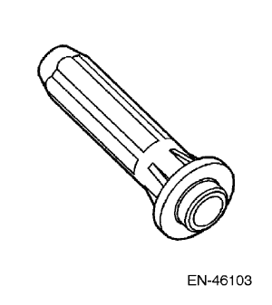
| EN-46103 Instalador de retén de válvula de actuador de árbol de levas |
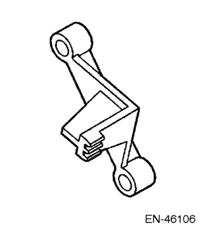
| EN-46106 Herramienta de sujeción de placa flexible |
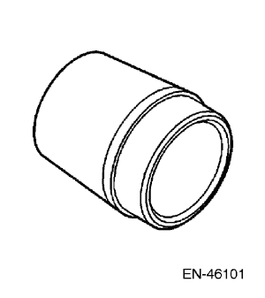
| EN-46101 Juego de guías de retén para tubo de bujía |

| EN-46105-1 y 2 Juego de herramientas de bloqueo de árbol de levas |
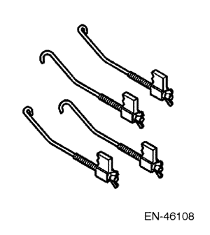
| EN-46108 Juego de herramientas de retención de cadena de distribución |
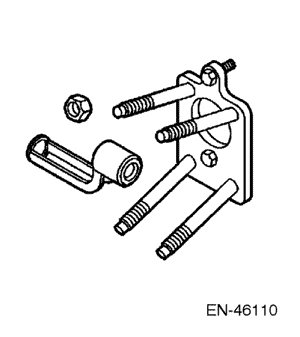
| EN-46110 Compresor de muelles de válvula en el vehículo |
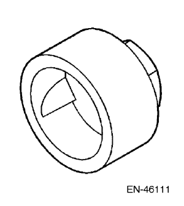
| EN-46111 Casquillo para girar el cigüeñal |
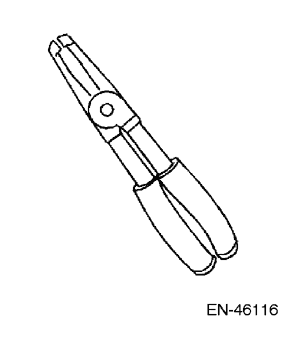
| EN-46116 Extractor/instalador de retenes de vástago de válvula |
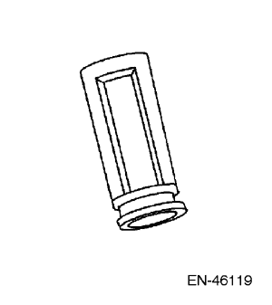
| EN-46119 Adaptador de compresor de muelles de válvula fuera del vehículo |
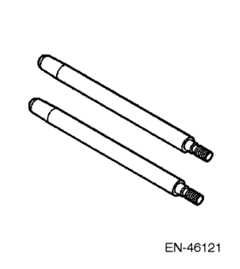
| EN-46121 Juego de pasadores guía de biela |
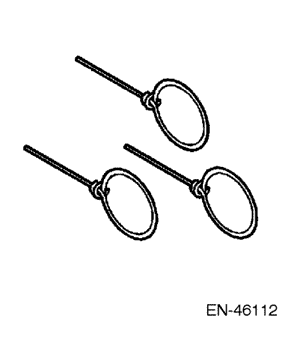
| Muelles de retracción de tensor de cadena de distribución |
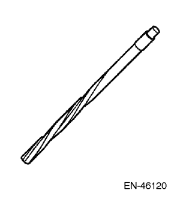
| EN-46120 y J-42096 escariador de guías de válvula |
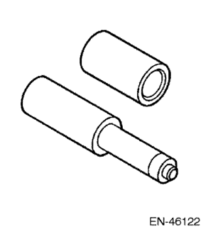
| EN-46122 Extractor/instalador de bola de retención de válvula de control de aceite |
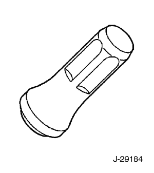
| J-29184 Instalador del retén de aceite delantero del cigüeñal |
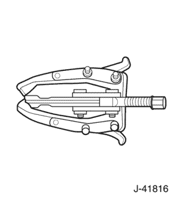
| J-41816 Extractor de tres patas |
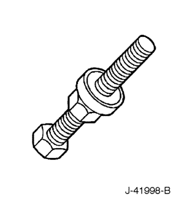
| J-41998-B Instalador de la polea del cigüeñal |
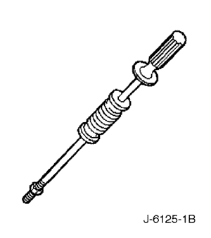
| J-6125-1B Mazo de deslizamiento |
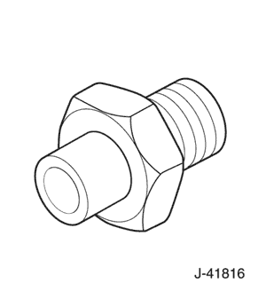
| J-36648-A Adaptador del manómetro del aceite |
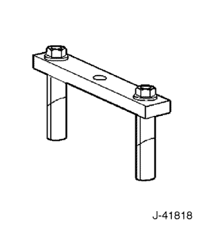
| J-41818 Herramienta de extracción de tapas de cojinete de bancada |
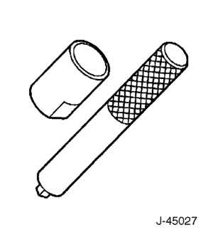
| J-45027 Herramienta tensora |
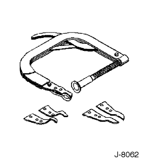
| J-8062 compresor de muelles de válvula |
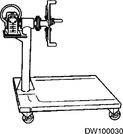
| DW100-030 soporte de reparación del motor |
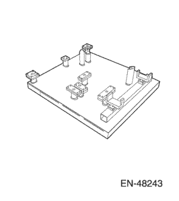
| EN-48243 Palet de instalación/desmontaje del conjunto del motor |

| EN-48244 Soporte del palet de instalación/desmontaje del conjunto del motor |

| DW110-060 Fijación del soporte del conjunto motor |

| EN-48313 Retén de la cadena de distribución |
LOCALIZACION DE COMPONENTES
Conjunto de tapa de la culata
- Tapa de árboles de levas, banco 2
- Junta de tapa de árboles de levas, banco 2
- Tapa de árboles de levas, banco 1
- Junta de tapa de árboles de levas, banco 1
- Retén de orificio de bujía en tapa de árboles de levas
- Tornillo de la tapa de los árboles de levas
- Aislante del tornillo de la tapa de árboles de levas
- Inserto de rosca de tornillo de bobina de encendido
- Tapón de llenado de aceite
- Junta tórica de llenado de aceite
- Racor de PCV de tapa de árboles de levas, banco 2
- Orificio de racor de PCV de tapa de árboles de levas, banco 1
- Junta tórica de racor de PCV de tapa de árboles de levas, banco 2
- bobina de encendido
- Tornillo de la bobina de encendido
- Bujía
Conjunto de la culata
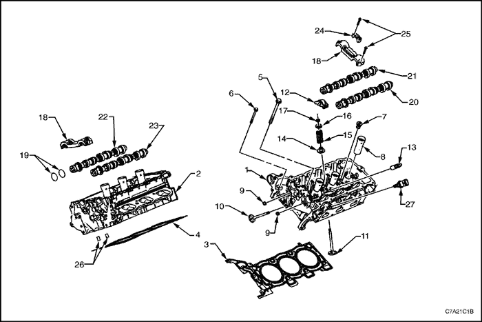
- Culata, banco 2
- Culata, banco 1
- Junta de la culata, banco 2
- Junta de la culata, banco 1
- Tornillo de la culata
- Tornillo delantero de la culata
- Tapón roscado del orificio de refrigerante de la culata
- Manguito de bujía
- Tapón de expansión del conducto de aceite de la culata
- válvula de escape
- Válvula de admisión
- Conjunto de balancín de la válvula
- Conjunto de compensador del juego de válvulas hidráulicas
- Retén de aceite del vástago de válvula
- muelle de válvula
- Platillos de muelle de las válvulas
- Chaveta del vástago de válvula
- Tapa de cojinete de empuje delantero de árbol de levas en culata
- Junta de estanqueidad de aceite de árbol de levas
- Árbol de levas de escape, banco 2
- Árbol de levas de admisión, banco 2
- Árbol de levas de admisión, banco 1
- Árbol de levas de escape, banco 1
- Tapa de árboles de levas en culata - intermedia
- Tornillo de tapa de árboles de levas en culata
- Válvula de retención del conducto de aceite de la culata
- Sensor de temperatura del refrigerante del motor
Conjunto de colector de admisión
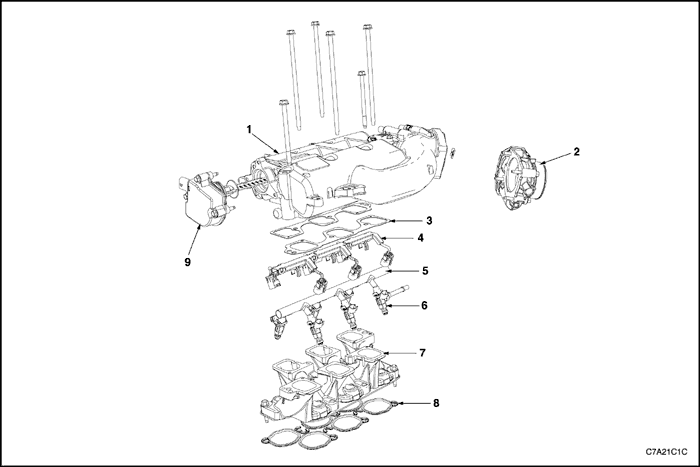
- Colector de admisión superior
- Conjunto del cuerpo del acelerador
- Junta entre el colector de admisión superior y el colector de admisión inferior
- Cableado de inyector de combustible
- rampa de inyectores
- Inyector de combustible
- Colector de admisión inferior
- Junta entre el colector de admisión inferior y la culata
- Válvula de control de ajuste del colector de admisión (IMTC)
Tapa delantera del motor
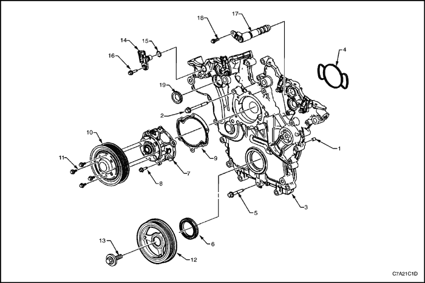
- Pasador de guía de tapa delantera del motor
- Tornillo de tapa delantera del motor, M10
- Tapa delantera del motor
- Junta de tapa delantera del motor
- Tornillo de tapa delantera del motor, M8
- Retén de tapa delantera del motor
- Conjunto de bomba de refrigerante
- Tornillo de bomba del refrigerante
- Junta de la bomba de refrigerante
- Polea de la bomba de refrigerante
- Tornillo de la polea de la bomba del refrigerante
- Equilibrador del cigüeñal
- Tornillo del equilibrador del cigüeñal
- Sensor de posición de árbol de levas
- Junta tórica de sensor de posición de árbol de levas
- Tornillo de sensor de posición de árbol de levas
- Válvula de solenoide de actuador de posición de árbol de levas
- Tornillo de válvula de solenoide de actuador de posición de árbol de levas
- Retén de válvula de solenoide de actuador de posición de árbol de levas
Componentes de cadenas de distribución
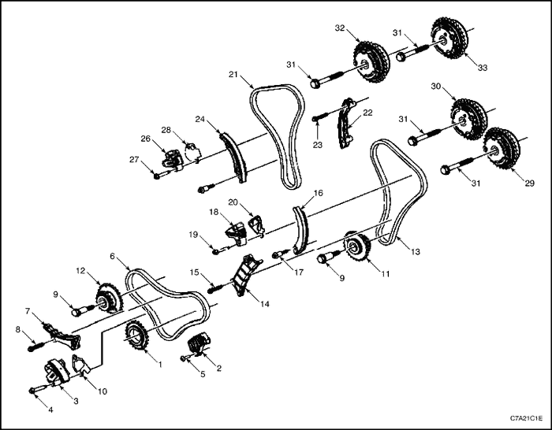
- Rueda dentada de cigüeñal
- Guía inferior de cadena de distribución primaria
- Tensor de cadena de distribución primaria
- Tornillo de tensor de la cadena de distribución primaria
- Tornillo de la guía de la cadena de distribución primaria inferior
- Cadena de distribución primaria
- Guía superior de cadena de distribución primaria
- Tornillo de la guía superior de la cadena de distribución primaria
- Tornillo de rueda dentada intermedia de eje de accionamiento de árbol de levas
- Rueda dentada intermedia del eje de accionamiento de árbol de levas, banco 2
- Rueda dentada intermedia del eje de accionamiento de árbol de levas, banco 1
- Cadena de distribución secundaria, banco 2
- Guía de cadena de distribución secundaria, banco 2
- Tornillo de guía de cadena de distribución secundaria, banco 2
- Zapata de cadena de distribución secundaria, banco 2
- Tornillo de zapata de cadena de distribución secundaria, banco 2
- Tensor de cadena de distribución secundaria, banco 2
- Tornillo de tensor de cadena de distribución secundaria, banco 2
- Junta de tensor de cadena de distribución secundaria, banco 2
- Cadena de distribución secundaria, banco 1
- Guía de cadena de distribución secundaria, banco 1
- Tornillo de guía de cadena de distribución secundaria, banco 1
- Zapata de cadena de distribución secundaria, banco 1
- Tornillo de zapata de cadena de distribución secundaria, banco 1
- Tensor de cadena de distribución secundaria, banco 1
- Tornillo de tensor de cadena de distribución secundaria, banco 1
- Junta de tensor de cadena de distribución secundaria, banco 1
- Actuador de posición de árbol de levas de escape, banco 2
- Actuador de posición de árbol de levas de admisión, banco 2
- Tornillo de actuador de posición de árbol de levas
- Actuador de posición de árbol de levas de escape, banco 1
- Actuador de posición de árbol de levas de admisión, banco 1
Conjunto del bloque del motor
- Conjunto de pistón y biela
- Tapa de bancada del cigüeñal
- Tapa de empuje de cojinete del cigüeñal
- Tornillo interior de tapa de bancada del cigüeñal
- Tornillo exterior de tapa de bancada del cigüeñal
- Tornillo lateral de tapa de bancada del cigüeñal, corto
- Tornillo lateral de tapa de bancada del cigüeñal, largo
- Tapón de expansión del conducto de aceite del bloque del motor, 10 mm
- Cigüeñal
- Pasador de guía de rueda dentada de cigüeñal
- Semicojinete superior de bancada
- Semicojinete inferior de bancada
- Semicojinete superior de empuje de bancada nº 3
- Tapón de expansión del conducto de aceite del bloque del motor, 14 mm
- Tapón roscado del conducto de aceite del bloque del motor, 14 mm
- Tapón roscado de drenaje de refrigerante del bloque del motor, 14 mm
- Tapón roscado del conducto de aceite del bloque del motor, 20 mm
- Tapón de expansión de refrigerante del núcleo del bloque del motor, 34,3 mm
- Pasador de guía de la caja de cambios
- Conjunto del alojamiento del retén de aceite trasero del cigüeñal
- Tornillo del conjunto del alojamiento del retén de aceite trasero del cigüeñal
- Pasador de guía del cárter del aceite
- Pasador de guía de la culata
- Tobera de aceite del pistón
- Tornillo de tobera de aceite del pistón
Componentes de pistón y biela
- Biela
- tornillo de biela
- Casquillo de biela
- Semicojinete inferior de biela
- Pistón
- bulón (del pistón)
- Retenedor de bulón de pistón
- Segmento de compresión superior del pistón
- Segmento de compresión inferior del pistón
- Segmento de compresión inferior del pistón
- Segmento expansor de control de engrase del pistón
- Espaciador del segmento de control de engrase del pistón
Conjunto de cárter de aceite
- Desviador de aceite
- Tubo de aspiración de la bomba de aceite
- Cárter de aceite
- tapón de vaciado del cárter del aceite, tapón de drenaje del cárter del aceite
- Sensor de nivel de aceite del motor
SISTEMA DE ADMISIÓN DE AIRE
- Carcasa superior del filtro de aire
- Junta del elemento del filtro de aire
- Elemento del filtro del aire
- Conjunto del tubo vertical del filtro de aire
- Conducto del aire de admisión inferior
- Junta del conducto del resonador del filtro de aire
- Conjunto del resonador del filtro de aire
- Resonador delantero del filtro de aire
- Junta del resonador del filtro de aire
- Resonador trasero del filtro de aire
- Carcasa inferior del filtro de aire
- Conjunto del sensor de flujo de aire másico (MAF)
- Manguito de codo de salida del filtro del aire
- Conducto de admisión de aire
- Manguito de PCV
Sistema de fijación del motor
- Conjunto de fijación delantera de la caja de cambios
- Soporte del adaptador de fijación del motor
- Conjunto de la fijación del motor
- Conjunto de bastidor
- Conjunto de fijación de la caja de cambios
- Soporte de la fijación trasera de la caja de cambios
- Fijación trasera de la caja de cambios
DIAGNÓSTICO
Diagnóstico del motor
Inicie el diagnóstico del sistema mecánico del motor repasando las vistas de ensamblaje. El repaso de la descripción y de la información de funcionamiento proporcionada le ayuda a determinar si el estado descrito por el cliente supone un fallo o puede asociarse a un funcionamiento normal del motor.
Síntomas
Diagnóstico basado en estrategia
- Repase las operaciones del sistema para familiarizarse con las funciones del sistema.
- Realice una comprobación del sistema de diagnóstico del equipo de gestión del motor.
Todos los diagnósticos realizados en un vehículos siguen un proceso lógico. El diagnóstico basado en estrategia es un enfoque uniforme para la reparación de todos los sistemas de un vehículo. El gráfico de diagnóstico basado en estrategia puede utilizarse siempre para resolver un problema en un sistema. El gráfico de diagnóstico es el lugar al que acudir antes de iniciar el proceso de reparación.
Inspección visual/física
- Revise si el vehículo cuenta con accesorios externos que puedan afectar de forma negativa al funcionamiento del motor.
- Revise los componentes de sistemas visibles y de fácil acceso por si presentasen signos obvios de daños o condiciones que puedan haber provocado el síntoma.
- Compruebe los siguientes aspectos del sistema de lubricación del motor:
- nivel correcto de aceite,
- viscosidad correcta del lubricante,
- aplicación correcta del filtro de aceite y
- aceite contaminado o quemado.
- Confirme las condiciones exactas de funcionamiento en las que se produce el fallo. Tenga en cuenta factores como:
- velocidad del motor (rpm)
- temperatura ambiente
- temperatura del motor,
- tiempo de calentamiento del motor y
- velocidad del vehículo.
- Compare los sonidos del motor, si fuese pertinente, con un motor en buen estado y asegúrese de que no está intentando diagnosticar un estado de funcionamiento normal.
Fallos intermitentes
Para fallos intermitentes, compruebe el vehículo en las mismas condiciones que el cliente informó para confirmar si el sistema funciona correctamente.
Comprobación de la presión de compresión
- Asegúrese de que la batería del vehículo está en buen estado y totalmente cargada.
- Ponga en marcha el vehículo hasta que el motor se encuentre a temperatura normal de funcionamiento.
- Desconecte los cables de encendido de las bujías.
- Desenchufe el conector eléctrico de los inyectores de combustible.
- Quite todas las bujías.
Aviso: No inserte objetos en la apertura de la placa del acelerador. Podría provocar daños en el cuerpo de la mariposa electrónica, lo que requeriría la sustitución del conjunto del cuerpo de la mariposa electrónica.
- Bloquee el varillaje de la mariposa en la posición de completamente abierta.
- Instale el medidor de compresión en el cilindro que desee comprobar.
- Utilizando el motor de arranque del vehículo, haga girar el motor durante 4 carreras de compresión, o soplidos, para el cilindro que esté comprobando. Si el motor gira durante más de cuatro carreras de compresión, vuelva a comprobar el cilindro.
- Registre la lectura de compresión.
- Retire el medidor de compresión del cilindro que desee comprobar.
- Repita los pasos del 8 al 11 en el resto de cilindros. Deben comprobarse todos los cilindros para obtener unos resultados válidos.
- Si alguno de los cilindros presenta una compresión baja, inyecte aproximadamente 15 ml de aceite de motor en el cilindro a través del orificio de la bujía.
- Repita los pasos del 8 al 11 en todos los cilindros con compresión baja.
- La compresión mínima en cualquiera de los cilindros no debería ser inferior al 70% del valor máximo del cilindro. Ningún cilindro debería presentar una lectura inferior a 690 kpa (100 psi). Por ejemplo, si la presión máxima en un cilindro es de 1035 kPa (150 psi), la presión mínima permitida debería ser de 725 kPa (105 psi). Multiplique la presión máxima por el 70%, 1035 kPa x 70% = 725 kPa (150 psi x 70% = 105 psi), para determinar la presión mínima permitida en cualquier otro cilindro.
- Normal: La compresión aumenta rápidamente y de forma uniforme hasta la compresión especificada.
- Fugas en los segmentos del pistón: La compresión es baja en la primera carrera de compresión. La compresión aumenta en las siguientes carreras, pero no alcanza el nivel normal. La compresión mejora considerablemente al añadir aceite.
- Fugas en las válvulas: La compresión es baja en la primera carrera de compresión. La compresión no aumenta en las siguientes carreras y no alcanza el nivel normal. La compresión no mejora mucho, en el caso de que mejore, al añadir aceite.
- Fugas en la junta de culata: La compresión es baja en la primera carrera de compresión. La compresión no aumenta en las siguientes carreras y no alcanza el nivel normal. La compresión no mejora mucho, en el caso de que mejore, al añadir aceite. Los cilindros adyacentes tienen las mismas lecturas de compresión baja o similares.
- Si uno o más cilindros no cumplen con los valores de compresión mínima especificados, repare o sustituya todos los componentes dañados o desgastados y vuelva a comprobar el motor.
Comprobación de la presión del aceite
- Con el vehículo sobre una superficie plana, deje un tiempo de decantación adecuado, entre 2 y 3 minutos, y mida el nivel de aceite del motor. Añada el aceite de motor del grado recomendado y rellene la caja del cigüeñal hasta que el nivel de aceite alcance la marca FULL del indicador del nivel de aceite.
- Accione el motor y verifique si la presión es baja o no hay aceite con el manómetro de aceite o con la luz indicadora de aceite. Escuche el motor e intente detectar una serie de válvulas ruidosa o ruido de golpeteo.
- Compruebe lo siguiente:
- Aceite de motor diluido por humedad o mezclas de combustible sin quemar
- Viscosidad incorrecta del aceite del motor para la temperatura esperada
- Sensor de presión de aceite incorrecto o defectuoso
- Manómetro de presión de aceite incorrecto o defectuoso
- Filtro de aceite obstruido
- Fallo de funcionamiento en la válvula de derivación del filtro de aceite
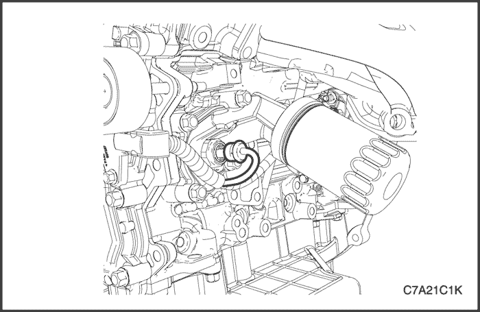
- Desmonte el presostato del adaptador del filtro de aceite.
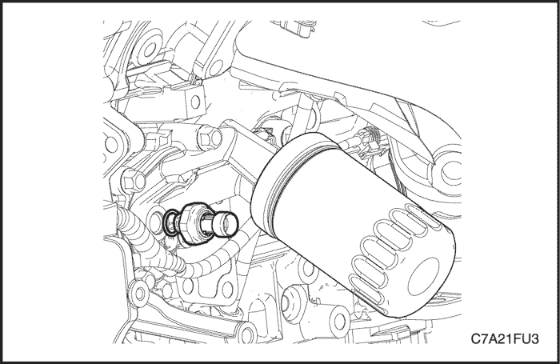
- Coloque el adaptador del manómetro del aceite y el propio manómetro en el sitio del presostato de aceite.
- Arranque el motor y deje que el motor alcance la temperatura de funcionamiento normal.
- Mida la presión de aceite del motor a velocidad de ralentí.
- La presión de aceite mínima debería ser de 69 kPa (10,00 lbs-pulg2) a ralentí y 138 kpa (20,01 lbs-pulg2) a 2.000 rpm.
- Si la presión del aceite del motor está por debajo de las especificaciones mínimas, revise el motor por si presenta alguno de los siguientes estados:
- Bomba de aceite desgastada o sucia
- Avería en la válvula de descarga de presión de la bomba de aceite
- Tamiz de la bomba de aceite flojo, obstruido o dañado
- Excesiva holgura del cojinete
- Conductos de paso del aceite rotos, porosos u obstruidos
- Faltan los tapones de los conductos de aceite del bloque del motor o están mal colocados
- Empujadores de válvula rotos
- Adaptador del filtro de aceite flojo
- Después de comprobar la presión del aceite, retire el manómetro y vuelva a poner el presostato de aceite a 13 N•m (115 lb-pulg.).
- Compruebe el nivel de aceite. Añada aceite hasta alcanzar la marca MAX si fuera necesario.
Diagnóstico de fuga de aceite
Importante: Puede reparar la mayoría de las fugas de aceite ubicando visualmente la fuga, reparando o sustituyendo el componente, o sellando la superficie de la junta. Una vez identificada la fuga, determina la causa de la misma. Repare la causa de la fuga, así como la propia fuga.
| Paso | Medida | Valor(es) | Sí | No |
| 1 | - Accione el vehículo hasta que alcance la temperatura normal de funcionamiento.
- Estaciones el vehículo sobre una superficie plana, sobre una gran lámina de papel u otra superficie limpia.
- Espere 15 minutos.
- Compruebe si hay goteo.
¿Hay goteo? | - | Vaya al Paso 2 | Sistema OK |
| 2 | ¿Puede identificar el tipo de líquido y la ubicación aproximada de la fuga? | - | Vaya al Paso 10 | Vaya al Paso 3 |
| 3 | - Compruebe visualmente las zonas circundantes del componente sospechoso. Utilice un espejo pequeño para poder visualizar las zonas de difícil acceso.
- Compruebe si hay fugas en las siguientes ubicaciones:
- superficies de estanqueidad, superficies de cierre
- Empalmes
- Componentes rotos o dañados
¿Puede identificar el tipo de líquido y la ubicación aproximada de la fuga? | - | Vaya al Paso 10 | Vaya al Paso 4 |
| 4 | - Limpie completamente el motor y los componentes circundantes.
- Conduzca el vehículo durante algunos kilómetros a la temperatura normal de funcionamiento y a diferentes velocidades.
- Estaciones el vehículo sobre una superficie plana, sobre una gran lámina de papel u otra superficie limpia.
- Espere 15 minutos.
- Identifique el tipo de líquido y la ubicación aproximada de la fuga.
¿Puede identificar el tipo de líquido y la ubicación aproximada de la fuga? | - | Vaya al Paso 10 | Vaya al Paso 5 |
| 5 | - Compruebe visualmente las zonas circundantes del componente sospechoso. Utilice un espejo pequeño para poder visualizar las zonas de difícil acceso.
- Compruebe si hay fugas en las siguientes ubicaciones:
- superficies de estanqueidad, superficies de cierre
- Empalmes
- Componentes rotos o dañados
¿Puede identificar el tipo de líquido y la ubicación aproximada de la fuga? | - | Vaya al Paso 10 | Vaya al Paso 6 |
| 6 | - Limpie completamente el motor y los componentes circundantes.
- Aplique un polvo tipo talco en el área con supuestas fugas.
- Conduzca el vehículo durante algunos kilómetros a la temperatura normal de funcionamiento y a diferentes velocidades.
- Identifique el tipo de líquido y la ubicación aproximada de la fuga basándose en las decoloraciones de la superficie con polvo.
¿Puede identificar el tipo de líquido y la ubicación aproximada de la fuga? | - | Vaya al Paso 10 | Vaya al Paso 7 |
| 7 | - Compruebe visualmente las zonas circundantes del componente sospechoso. Utilice un espejo pequeño para poder visualizar las zonas de difícil acceso.
- Compruebe si hay fugas en las siguientes ubicaciones:
- superficies de estanqueidad, superficies de cierre
- Empalmes
- Componentes rotos o dañados
¿Puede identificar el tipo de líquido y la ubicación aproximada de la fuga? | - | Vaya al Paso 10 | Vaya al Paso 8 |
| 8 | Utilice el kit de luz negra para identificar el tipo de líquido y la ubicación aproximada de la fuga. Consulte las instrucciones del fabricante cuando vaya a utilizar esta herramienta. ¿Puede identificar el tipo de líquido y la ubicación aproximada de la fuga? | - | Vaya al Paso 10 | Vaya al Paso 9 |
| 9 | - Compruebe visualmente las zonas circundantes del componente sospechoso. Utilice un espejo pequeño para poder visualizar las zonas de difícil acceso.
- Compruebe si hay fugas en las siguientes ubicaciones:
- superficies de estanqueidad, superficies de cierre
- Empalmes
- Componentes rotos o dañados
¿Puede identificar el tipo de líquido y la ubicación aproximada de la fuga? | - | Vaya al Paso 10 | Sistema OK |
| 10 | - Compruebe si el motor ha sufrido daños mecánicos. Debe prestarse especial atención a las siguientes áreas:
- Niveles de líquidos superiores a los recomendados
- Presiones de líquidos superiores a los recomendados
- Filtros de líquidos o válvulas bypass de presión obstruidas o averiadas
- Sistema de ventilación del motor obstruido o averiado
- Elementos de sujeción dañados o mal apretados
- Componentes rotos o porosos
- Sellantes o juntas inadecuadas
- Instalación inadecuada de sellantes o juntas
- Juntas dañadas o desgastadas
- Superficies de estanqueidad dañadas o desgastadas
- Compruebe si el motor ha sufrido modificaciones por parte del usuario.
¿Hay algún daño mecánico o modificaciones del cliente en el motor? | - | Vaya al Paso 11 | Sistema OK |
| 11 | Repare o sustituya todos los componentes dañados o modificados. ¿El motor sigue perdiendo aceite? | - | Vaya al Paso 11 | Sistema OK |
Inspección/diagnóstico del sistema de ventilación de la caja del cigüeñal
Resultados de un funcionamiento incorrecto
- Un manguito u orificio de ventilación de gases del cárter motor (PCV) obstruido puede provocar los siguientes problemas:
- - Ralentí irregular, ralentí inestable
- - Calado o ralentí bajo.
- Fugas de aceite.
- - Aceite en el filtro de aire.
- - Lodo en el motor
- Un manguito u orificio de la PCV con fugas puede causar los siguientes fallos:
- - Ralentí irregular, ralentí inestable
- - Calado
- - Ralentí acelerado
Comprobación funcional
Con estos sistemas, cualquier exceso en la capacidad del sistema derivado por un motor muy desgastado, una carga alta continuada, etc., se expulsa hasta el filtro de aire y pasa al motor.
El funcionamiento adecuado del sistema de ventilación de la caja del cigüeñal depende de un motor bien sellado. Si se advierte una acumulación o dilución de aceite y el sistema de ventilación de la caja del cigüeñal funciona correctamente, compruebe las posibles causas en el motor. Corrija cualquier problema que detecte.
Si un motor tiene un ralentí inestable, compruebe si el orificio de la PCV está obstruido, si el filtro de ventilación o el filtro de aire están sucios o si hay un manguito obstruido. Sustituya según necesidades. Utilice el procedimiento siguiente:
- Retire el manguito de PCV de la tapa de la culata.
- Ponga en marcha el motor a ralentí.
- Coloque su pulgar sobre el extremo del manguito para comprobar si hay vacío. Si no hay vacío en el manguito, compruebe los siguientes elementos:
- - Manguitos obstruidos
- - La boca del colector
- Apague el motor.
- Revise el orificio de PCV de la tapa de la culata por si hubiera suciedad o una obstrucción.
Fallo de encendido del motor sin ruidos internos en el motor
Causa | Medida correctora |
Presión de aceite alta. | |
Correa de transmisión de accesorios desgastada, dañada o mal instalada: rotura, golpes o ausencia de segmentos. Un DTC de fallo de encendido puede darse sin un estado de fallo de encendido real. | |
Componentes del sistema de accionamiento de accesorios desgastados, dañados o mal instalados. Un DTC de fallo de encendido puede darse sin un estado de fallo de encendido real. | - Compruebe los componentes del sistema de accionamiento de accesorios.
- Repare o sustituya los componentes dañados según sea necesario.
|
Polea del cigüeñal dañada, floja o mal instalada. Un DTC de fallo de encendido puede darse sin un estado de fallo de encendido real. | |
Rueda del reluctor del cigüeñal desgastada, dañada o mal instalada. Una rueda del reluctor del cigüeñal desgastada o dañada puede provocar diferentes síntomas dependiendo de la gravedad y ubicación del desgaste o daño. - Los sistemas con comunicaciones electrónicas, DIS o la bobina de cada cilindro, y un daño grave en el anillo del reluctor pueden provocar la pérdida periódica de la posición del cigüeñal, dejar de enviar señales y tener que sincronizar la posición del cigüeñal.
- En sistemas con comunicaciones electrónicas, DIS o la bobina de cada cilindro, un ligero daño en el anillo del reluctor puede no provocar la pérdida de la posición del cigüeñal ni fallos de encendido.
- En sistemas con comunicaciones mecánicas, con interruptor de alto voltaje, un daño grave en el anillo del reluctor puede provocar impulsos adicionales y afectar a la distribución de combustible y encendido.
| - Compruebe el sensor de posición del cigüeñal.
- Compruebe la rueda del reluctor del cigüeñal.
- Compruebe el cigüeñal.
- Repare o sustituya los componentes dañados según sea necesario.
|
Volante motor dañado, flojo o mal instalado. Un DTC de fallo de encendido puede darse sin un estado de fallo de encendido real. | |
Sistema de escapa dañado, mal instalado o limitado, conductos colapsados o abollados, silenciadores obstruidos o convertidores catalíticos averiados. Un DTC puede darse sin un estado de fallo real. | - Compruebe los componentes del sistema de escape.
- Repare o sustituya los componentes dañados según sea necesario.
|
Manguitos de vacío desgastados, dañados o mal instalados. | - Compruebe los componentes del sistema de vacío.
- Repare o sustituya los componentes dañados según sea necesario.
|
Cuerpo de la mariposa electrónica dañado o mal instalado. | - Compruebe el cuerpo de la mariposa electrónica.
- Repare o sustituya los componentes dañados según sea necesario.
|
Colector de admisión dañado o mal instalado. | - Compruebe el colector de admisión.
- Repare o sustituya los componentes dañados según sea necesario.
|
Culata dañada o mal instalada. El consumo de aceite puede ser la causa o no de fallos de encendido en el motor. | - Compruebe las bujías. Consulte "Comprobación de la bujía" en este apartado, en Controles del motor.
- Compruebe la compresión del motor. Consulte el apartado "Comprobación de la presión de compresión" de esta sección.
- Compruebe las culatas.
- Compruebe el bloque motor.
- Repare o sustituya los componentes dañados según sea necesario.
|
Muelle de válvula desgastado, flojo o roto. | - Compruebe los muelles de válvula.
- Repare o sustituya los componentes dañados según sea necesario.
|
Válvula desgastada, dañada o atascada, carbonilla en el vástago de la válvula o en el asiento. | - Compruebe las válvulas.
- Compruebe las guías de válvula.
- Repare o sustituya los componentes dañados según sea necesario.
|
Guía de válvula desgastada o dañada. | - Compruebe las guías de válvula.
- Compruebe las guías de válvulas. Compruebe las válvulas.
- Repare o sustituya los componentes dañados según sea necesario.
|
Empujador de válvula desgastado, dañado o sucio. | - Compruebe los empujadores de válvula.
- Compruebe el árbol de levas.
- Repare o sustituya los componentes dañados según sea necesario.
|
Lóbulo de árbol de levas desgastado o dañado. | - Compruebe el árbol de levas.
- Compruebe los empujadores de válvula.
- Repare o sustituya los componentes dañados según sea necesario.
|
Cadena de distribución y ruedas dentadas desgastadas, dañadas o flojas. | - Compruebe la cadena de distribución y las ruedas dentadas.
- Repare o sustituya los componentes dañados según sea necesario.
|
Pistón desgastado, dañado o mal instalado. Los pistones deben instalarse con la marca en la parte superior del pistón mirando hacia la parte delantera del motor; los bulones de pistón deben centrarse en el orificio del bulón de la biela. El consumo de aceite puede ser la causa o no de fallos de encendido en el motor. | - Compruebe las bujías. Consulte el apartado "Comprobación de bujía" de esta sección.
- Compruebe la compresión del motor. Consulte el apartado "Comprobación de la presión de compresión" de esta sección.
- Compruebe los diámetros interiores de los cilindros.
- Compruebe los pistones.
- Compruebe los bulones.
- Compruebe las bielas.
- Repare o sustituya los componentes dañados según sea necesario.
|
Fallo de encendido en el motor con ruidos anormales en el interior del motor
Causa | Medida correctora |
Correa de transmisión de accesorios desgastada, dañada o mal instalada: rotura, golpes o ausencia de segmentos. Un DTC de fallo de encendido puede darse sin un estado de fallo de encendido real. | |
Componentes del sistema de accionamiento de accesorios desgastados, dañados o mal instalados. Un DTC de fallo de encendido puede darse sin un estado de fallo de encendido real. | |
Polea del cigüeñal desgastada, dañada, mal instalada o floja. Un código de fallo de encendido puede darse sin un estado de fallo de encendido real. | |
Volante motor desgastado, dañado, mal instalado o flojo. Un código de fallo de encendido puede darse sin un estado de fallo de encendido real. | |
Pistón desgastado, dañado o mal instalado. Los pistones deben instalarse con la marca en la parte superior del pistón mirando hacia la parte delantera del motor; los bulones de pistón deben centrarse en el orificio del bulón de la biela. El consumo de aceite puede ser la causa o no de fallos de encendido en el motor. | |
Cojinete de empuje del cigüeñal desgastado, dañado o mal instalado. Un código de fallo de encendido puede darse sin un estado de fallo de encendido real. | - Compruebe el cigüeñal.
- Compruebe el cojinete de empuje del cigüeñal.
- Repare o sustituya los componentes dañados según sea necesario.
|
Fallo de encendido en el motor con ruido anormal en la serie de válvulas
Causa | Medida correctora |
Válvula desgastada, dañada o atascada, carbonilla en el vástago de la válvula o en el asiento. | - Compruebe las válvulas.
- Compruebe las guías de válvula.
- Repare o sustituya los componentes dañados según sea necesario.
|
Empujador de válvula desgastado, dañado o sucio. | - Compruebe los empujadores de válvula.
- Compruebe el árbol de levas.
- Repare o sustituya los componentes dañados según sea necesario.
|
Lóbulo de árbol de levas desgastado o dañado. | - Compruebe el árbol de levas.
- Compruebe los empujadores de válvula.
- Repare o sustituya los componentes dañados según sea necesario.
|
Cadena de distribución y ruedas dentadas desgastadas, dañadas o flojas. | - Compruebe la cadena de distribución y las ruedas dentadas.
- Repare o sustituya los componentes dañados según sea necesario.
|
Fallo de encendido en el motor con consumo de refrigerante
Causa | Medida correctora |
Culata dañada o mal instalada. El consumo de refrigerante puede ser la causa o no de fallos de encendido en el motor. | |
Fallo de encendido en el motor con consumo excesivo de aceite
Causa | Medida correctora |
Válvula desgastada o dañada. | - Compruebe las válvulas.
- Compruebe las guías de válvula.
- Repare o sustituya los componentes dañados según sea necesario.
|
Segmentos de pistón desgastados, dañados o mal instalados. Los segmentos del pistón deben instalarse con la marca de la parte superior del segmento del pistón mirando hacia arriba. | |
Ruido en el motor al arrancar que sólo dura unos cuantos segundos
Causa | Medida correctora |
Aceite de motor incorrecto, viscosidad. | |
Filtro de aceite incorrecto, sin opción antirretorno. | |
Válvula bypass del filtro de aceite desgastada, dañada o mal instalada. | - Compruebe la válvula bypass del filtro de aceite.
- Repare o sustituya los componentes dañados según sea necesario.
|
Nivel de fugas alto en empujador de válvula. | - Compruebe los empujadores de válvula.
- Repare o sustituya los componentes dañados según sea necesario.
|
Cojinete de empuje del cigüeñal desgastado, dañado o mal instalado. | - Compruebe el cigüeñal.
- Compruebe el cojinete de empuje del cigüeñal.
- Repare o sustituya los componentes dañados según sea necesario.
|
Ruido en la parte superior del motor, sea cual sea la velocidad del motor
Causa | Medida correctora |
Presión del aceite baja. | |
Lubricación incorrecta de los componentes de la serie de válvulas. | - Verifique la presión del aceite. Consulte el apartado "Comprobación de la presión del aceite" de esta sección.
- Compruebe los empujadores de válvula.
- Compruebe la válvula bypass del filtro de aceite.
- Compruebe la pantalla de la bomba y la bomba de aceite.
- Compruebe los conductos de paso del aceite del bloque motor.
- Repare o sustituya los componentes dañados según sea necesario.
|
Muelle de válvula roto. | - Compruebe los muelles de válvula.
- Repare o sustituya los componentes dañados según sea necesario.
|
Válvulas desgastadas, dañadas o atascadas, carbonilla en el vástago de la válvula o en el asiento. | - Compruebe las válvulas.
- Compruebe las guías de válvula.
- Repare o sustituya los componentes dañados según sea necesario.
|
Guía de válvula desgastada o dañada. | - Compruebe las guías de válvula.
- Compruebe las válvulas.
- Repare o sustituya los componentes dañados según sea necesario.
|
Empujador de válvula desgastado, dañado o sucio. | - Compruebe los empujadores de válvula.
- Repare o sustituya los componentes dañados según sea necesario.
|
Lóbulos de árbol de levas desgastados o dañados. | - Compruebe los lóbulos de árbol de levas del motor.
- Repare o sustituya los componentes dañados según sea necesario.
|
Cadena de distribución y ruedas dentadas desgastadas, dañadas, mal instaladas o flojas. | - Compruebe la cadena de distribución y las ruedas dentadas.
- Repare o sustituya los componentes dañados según sea necesario.
|
Si cuenta con él, tensor de la cadena de distribución desgastado, dañado o mal instalado. | - Revise el tensor de la cadena de distribución.
- Repare o sustituya los componentes dañados según sea necesario.
|
Ruido en la parte inferior del motor, sea cual sea la velocidad del motor
Causa | Medida correctora |
Presión del aceite baja. | - Verifique la presión del aceite. Consulte el apartado "Comprobación de la presión del aceite" de esta sección.
- Repare o sustituya los componentes dañados según sea necesario.
|
Detonación o golpeteo de bujías. | - Compruebe el funcionamiento del sistema de los controles de encendido. Consulte la Sección 1F3, Controles del motor - HFV6 3.2L en la información sobre códigos DTC del vehículo.
- Repare o sustituya los componentes dañados según sea necesario.
|
Correa de accionamiento de accesorios desgastada, dañada o mal instalada: rotura, golpes o ausencia de segmentos en la correa de accionamiento de accesorios. | - Compruebe los componentes del sistema de accionamiento de accesorios.
- Repare o sustituya los componentes dañados según sea necesario.
|
Componentes del sistema de accionamiento de accesorios desgastados, dañados o mal instalados. | - Compruebe los componentes del sistema de accionamiento de accesorios.
- Repare o sustituya los componentes dañados según sea necesario.
|
Polea del cigüeñal desgastada, dañada o mal instalada. | - Compruebe la polea del cigüeñal.
- Compruebe el cigüeñal.
- Repare o sustituya los componentes dañados según sea necesario.
|
Volante motor desgastado, dañado o mal instalado. | - Compruebe el volante motor.
- Compruebe los tornillos del volante motor.
- Compruebe el convertidor de par.
- Compruebe los tornillos del convertidor de par.
- Compruebe el cigüeñal.
- Repare o sustituya los componentes dañados según sea necesario.
|
Convertidor de par desgastado, dañado o mal instalado. | - Compruebe el convertidor de par.
- Compruebe los tornillos del convertidor de par.
- Compruebe el volante motor.
- Repare o sustituya los componentes dañados según sea necesario.
|
Cárter de aceite dañado, en contacto con el tamiz de la bomba de aceite - un cárter de aceite dañado puede estar flojo, mal colocado o restringir el flujo de aceite al tamiz de la bomba de aceite, evitando el correcto flujo del aceite hasta la bomba de aceite. | - Compruebe el cárter de aceite.
- Compruebe la pantalla de la bomba del aceite.
- Repare o sustituya los componentes dañados según sea necesario.
|
Tamiz de la bomba de aceite desgastado, dañado, mal instalado o restringido - un cárter de aceite dañado puede estar flojo, mal colocado o restringir el flujo de aceite al tamiz de la bomba de aceite, evitando el correcto flujo del aceite hasta la bomba de aceite. | - Compruebe el cárter de aceite.
- Compruebe la pantalla de la bomba del aceite.
- Repare o sustituya los componentes dañados según sea necesario.
|
Pistón desgastado, dañado o mal instalado - los pistones deben instalarse con la marca de la parte superior del pistón mirando hacia la parte delantera del motor. Los bulones de pistón deben centrarse en el orificio del bulón de la biela. | - Compruebe las bujías. Consulte la Sección 1A3, Información general sobre el motor - HFV6 3.2L".
- Compruebe la compresión del motor. Consulte el apartado "Comprobación de la presión del aceite" de esta sección.
- Compruebe los diámetros interiores de los cilindros.
- Compruebe los pistones.
- Compruebe los bulones.
- Compruebe las bielas.
- Repare o sustituya los componentes dañados según sea necesario.
|
Cojinete de la biela desgastado, dañado o mal instalado. | - Compruebe las bielas.
- Compruebe los cojinetes de biela.
- Compruebe las muñequillas de biela.
- Repare o sustituya los componentes dañados según sea necesario.
|
Cojinete del cigüeñal desgastado, dañado o mal instalado. | - Compruebe los cojinetes del cigüeñal.
- Compruebe los muñones del cigüeñal.
- Repare o sustituya los componentes dañados según sea necesario.
|
Ruido en el motor con carga
Causa | Medida correctora |
Presión del aceite baja. | - Verifique la presión del aceite. Consulte el apartado "Comprobación de la presión del aceite" de esta sección.
- Repare o sustituya los componentes según sea necesario.
|
Detonación o golpeteo de bujías. | - Compruebe el correcto funcionamiento de los controles de encendido. Consulte la Sección 1F3, Controles del motor - HFV6 3.2L en la información sobre códigos DTC del vehículo.
- Repare o sustituya los componentes dañados según sea necesario.
|
Volante motor desgastado, dañado o mal instalado. | - Compruebe el volante motor.
- Compruebe los tornillos del volante motor.
- Compruebe el convertidor de par.
- Compruebe los tornillos del convertidor de par.
- Compruebe el cigüeñal.
- Repare o sustituya los componentes dañados según sea necesario.
|
Convertidor de par desgastado, dañado o mal instalado. | - Compruebe el convertidor de par.
- Compruebe los tornillos del convertidor de par.
- Compruebe el volante motor.
- Repare o sustituya los componentes dañados según sea necesario.
|
Pistones desgastados, dañados o mal instalados - los pistones deben instalarse con la marca de la parte superior del pistón mirando hacia la parte delantera del motor. Los bulones de pistón deben centrarse en el orificio del bulón de la biela. | - Compruebe los diámetros interiores de los cilindros.
- Compruebe los pistones.
- Compruebe los bulones.
- Compruebe las bielas.
- Repare o sustituya los componentes dañados según sea necesario.
|
Cojinete de la biela desgastado, dañado o mal instalado. | - Compruebe las bielas.
- Compruebe los cojinetes de biela.
- Compruebe las muñequillas de biela.
- Repare o sustituya los componentes dañados según sea necesario.
|
Cojinete del cigüeñal desgastado, dañado o mal instalado. | - Compruebe los cojinetes del cigüeñal.
- Compruebe los muñones del cigüeñal.
- Repare o sustituya los componentes dañados según sea necesario.
|
El motor no gira - El cigüeñal no gira
Causa | Medida correctora |
Componente del sistema de accionamiento de accesorios agarrotado. | - Desmonte las correas de accionamiento de los accesorios.
- Gire el cigüeñal a mano en la polea o el volante motor.
|
Cilindro bloqueado hidráulicamente. - Refrigerante/anticongelante en el cilindro
- Aceite en el cilindro
- Combustible en el cilindro
| - Retire las bujías y compruebe si hay líquido.
- Compruebe si la junta de culata está rota.
- Compruebe si el bloque motor o la culata están rotas.
- Compruebe si hay algún inyector de combustible agarrotado.
|
Convertidor de par de la caja de cambios automática agarrotado. | - Quite los tornillos del convertidor de par.
- Gire el cigüeñal a mano en la polea o el volante motor.
|
Caja de cambios manual agarrotada. | - Desmonte el embrague.
- Gire el cigüeñal a mano en la polea o el volante motor.
|
Cadena de distribución y/o piñones rotos. | - Compruebe la cadena de distribución y los piñones.
- Haga las reparaciones necesarias.
|
Cigüeñal agarrotado. | - Compruebe el cigüeñal.
- Haga las reparaciones necesarias.
|
Material en el cilindro. - Válvula rota
- Material en el pistón
- Material extraño
| - Compruebe si el cilindro presenta componentes dañados y/o materiales extraños.
- Repare o sustituya los componentes según sea necesario.
|
Cigüeñal o cojinetes de biela agarrotados. | - Compruebe el cigüeñal y los cojinetes de biela.
- Haga las reparaciones necesarias.
|
Biela doblada o rota. | - Compruebe las bielas.
- Haga las reparaciones necesarias.
|
Cigüeñal roto. | - Compruebe el cigüeñal.
- Haga las reparaciones necesarias.
|
Refrigerante en la cámara de combustión
Definición: Un humo blanco excesivo y/o un olor a refrigerante desde el tubo de escape pueden indicar la presencia de refrigerante en la cámara de combustión. Un nivel de refrigerante bajo, un ventilador de refrigeración averiado o un termostato roto pueden provocar un estado de "sobretemperatura" que puede dañar los componentes del motor.
Causa | Medida correctora |
- Una velocidad de giro inferior a la normal puede indicar la presencia de refrigerante en la cámara de combustión. Consulte El motor no gira - El cigüeñal no gira.
- Extraiga las bujías y compruebe si están saturadas por refrigerante o si hay refrigerante en el diámetro interior del cilindro.
- Realice una prueba de fugas en el cilindro. Durante esta prueba, un exceso de burbujas de aire dentro del refrigerante pueden indicar la existencia de una junta rota o un componente dañado.
- Realice una prueba de compresión en el cilindro. Dos cilindros "uno al lado del otro" en el bloque motor con compresión baja pueden indicar la presencia de una junta de culata defectuosa. Consulte el apartado "Comprobación de la presión de compresión" de esta sección.
|
Colector de admisión agrietado o junta dañada. | Sustituya los componentes si fuese necesario. |
Junta de la culata dañada. | |
Culata deformada. | |
Culata agrietada. | Sustituya la culata y su junta. |
Camisa de cilindro o bloque motor agrietados. | Sustituya los componentes si fuese necesario. |
Porosidad en la culata o en el bloque motor. | Sustituya los componentes si fuese necesario. |
Refrigerante en el aceite del motor
Definición: Aceite con espuma o decolorado, o un estado de "llenado excesivo" de aceite de motor pueden indicar la presencia de refrigerante en la caja del cigüeñal del motor. Un nivel de refrigerante bajo, un ventilador de refrigeración averiado o un termostato roto pueden provocar un estado de "sobretemperatura" que puede dañar los componentes del motor. El aceite de motor y el filtro de aceite contaminados deben sustituirse.
Causa | Medida correctora |
- Compruebe si el aceite forma demasiada espuma o si hay un estado de llenado excesivo. El aceite diluido con refrigerante puede que no lubrique bien los cojinetes del cigüeñal y puede provocar daños en los componentes. Consulte Ruido en la parte inferior del motor, sea cual sea la velocidad del motor.
- Realice una prueba de fugas en el cilindro. Durante esta prueba, un exceso de burbujas de aire dentro del sistema de refrigeración pueden indicar la existencia de una junta rota o un componente dañado.
- Realice una prueba de compresión en el cilindro. Dos cilindros "uno al lado del otro" en el bloque motor con compresión baja pueden indicar la presencia de una junta de culata defectuosa. Consulte el apartado "Comprobación de la presión de compresión" de esta sección.
|
Junta de la culata dañada. | |
Culata deformada. | |
Culata agrietada. | Sustituya la culata y su junta. |
Camisa de cilindro o bloque motor agrietados. | Sustituya los componentes si fuese necesario. |
Porosidad en la culata o en el bloque motor. | Sustituya los componentes si fuese necesario. |
Diagnóstico de la correa de accionamiento de accesorios
Diagnóstico de chirrido de la correa de accionamiento
Definición: El chirrido en la correa de accionamiento de accesorios puede definirse como un ruido agudo que se escucha una vez por cada revolución de la correa de accionamiento o de una polea. Los siguientes elementos señalan la presencia de chirridos:
- Un ruido agudo que se escucha una vez por cada revolución de la correa de transmisión o una polea de accionamiento de accesorios.
- El chirrido puede producirse en estado de arranque en frío y desaparecer una vez que el vehículo alcanza la temperatura normal de funcionamiento.
Asistencia en el diagnóstico
El ruido de chirrido puede ser intermitente debido a humedad en la correa de transmisión o polea(s) de accionamiento de accesorios. Para poder simular dicho estado, puede ser necesario pulverizar algo de agua en la correa de transmisión. Si se pulveriza agua en la correa de transmisión se puede simular el síntoma, limpiar la(s) polea(s) de accionamiento de los accesorios es probablemente la mejor solución.
Una instalación inadecuada, un componente de suspensión o carrocería flojo, u otros elementos del vehículo también pueden provocar el chirrido.
Descripción de la prueba
El (los) número(s) que sigue(n) a continuación corresponde(n) al (a los) paso(s) de la tabla de diagnóstico.
- El ruido de chirrido puede no estar relacionado con el motor. Esta paso tiene como objeto comprobar que el motor está haciendo ese ruido. Si el motor no es el causante del ruido, no siga utilizando esta tabla.
- El ruido también puede ser un ruido interno del motor. Desmonte la correa de transmisión y ponga en marcha el motor durante unos segundos, de este modo podrá comprobar si el chirrido está relacionado con la correa de transmisión o no. Con la correa de transmisión desmontada, la bomba de agua no funcionará y el motor puede sobrecalentarse. También pueden generarse códigos de diagnóstico de avería (DTC) cuando el motor se pone en marcha sin la correa de transmisión.
- Compruebe la correa de transmisión por si presenta signos de pildeo. El pildeo es la presencia de bolas pequeñas, tiras o bandas en las ranuras de la correa de transmisión provocadas por la acumulación de polvo de goma.
- La mala alineación de las poleas de accionamiento de accesorios puede estar causada por un montaje incorrecto o una mala instalación de un componente de accionamiento de accesorios, o en el caso de que la polea esté doblada hacia dentro o hacia fuera por una reparación anterior. Compruebe si la polea está mal alineada utilizando una regla en las ranuras de la polea entre dos o tres poleas. Si se localiza una polea mal alineada, consulte el apartado de ese componente de accionamiento de accesorios para el procedimiento de desmontaje e instalación de esa polea.
- La comprobación de los elementos de sujeción puede eliminar la posibilidad de que se haya instalado un tornillo, tuerca, separador o arandela incorrectos.
- La comprobación de las poleas de accionamiento de accesorios debe incluir la búsqueda de pliegues, abolladuras o cualquier otro daño en las poleas que evite que la correa de transmisión esté bien asentada en las ranuras de la polea, o sobre la superficie lisa de la polea cuando la parte trasera de la correa de transmisión se utiliza para accionar la polea.
- La sustitución de la correa de transmisión cuando no está dañada o si no hay un pildeo excesivo es tan sólo una reparación temporal.
| Paso | Medida | Valor(es) | Sí | No |
| 1 | ¿Ha revisado la información de diagnóstico Síntomas - Mecánica del motor y realizado las inspecciones necesarias? | - | Vaya al Paso 2 | |
| 2 | Compruebe si hay un ruido de chirrido. ¿El motor emite un ruido de chirrido? | - | Vaya al Paso 3 | Ir a Ayudas para el diagnóstico |
| 3 | - Desmonte la correa de transmisión. Consulte la Sección 1C2, "Mecánica del motor - HFV6 3.2L".
- Ponga en marcha el motor durante no más de 30 ó 40 segundos.
¿Sigue produciéndose el ruido de chirrido? | - | | Vaya al Paso 4 |
| 4 | Comprobar si hay un pildeo excesivo en la correa de transmisión que supere 1/3 de la profundidad de las ranuras de la correa de transmisión. ¿Hay pildeo en las ranuras de la correa de transmisión? | - | Vaya al Paso 5 | Vaya al Paso 6 |
| 5 | Limpie las poleas de la correa de accionamiento de accesorios con un cepillo de alambre adecuado. ¿Estaban limpias las poleas de la correa de accionamiento de accesorios? | - | Vaya al Paso 15 | - |
| 6 | Compruebe si las poleas de accionamiento de accesorios están mal alineadas. ¿Las poleas están mal alineadas? | - | Vaya al Paso 7 | Vaya al Paso 8 |
| 7 | Sustituya y/o repare la mala alineación de las poleas de la correa de accionamiento de accesorios. ¿Ha sustituido y/o reparado las poleas de la correa de accionamiento de accesorios? | - | Vaya al Paso 15 | - |
| 8 | Compruebe si los soportes de la correa de accionamiento de accesorios están doblados o agrietados. ¿Hay algún soporte de la correa de accionamiento de accesorios doblado y/o agrietado? | - | Vaya al Paso 9 | Vaya al Paso 10 |
| 9 | Sustituya cualquier soporte de la correa de accionamiento de accesorios doblado y/o agrietado. ¿Ha sustituido todos los soportes de la correa de accionamiento de accesorios doblados y/o agrietados? | - | Vaya al Paso 15 | - |
| 10 | Compruebe si faltan sujeciones, son inadecuadas o si están flojas. ¿Ha encontrado alguna sujeción incorrecta, floja o ausente? | - | Vaya al Paso 11 | Vaya al Paso 12 |
| 11 | - Sustituya cualquier elemento de sujeción incorrecto o ausente.
- Apriete todos los elementos de sujeción flojos. Consulte el apartado Especificaciones de apriete de los elementos de fijación de esta sección.
¿Se han apretado y/o sustituido los elementos de fijación? | - | Vaya al Paso 15 | - |
| 12 | Compruebe si las poleas de accionamiento de accesorios están dobladas. ¿Se ha encontrado alguna polea de la correa de accionamiento de accesorios doblada? | - | Vaya al Paso 13 | Vaya al Paso 14 |
| 13 | Sustituya las poleas de la correa de accionamiento de accesorios dobladas. ¿Se han sustituido las poleas de la correa de accionamiento de accesorios dobladas? | - | Vaya al Paso 15 | - |
| 14 | ¿Se ha sustituido la correa de transmisión? | - | Vaya al Paso 15 | - |
| 15 | - Borre todos los códigos.
- Ponga en marcha el motor para verificar la reparación.
¿Sigue produciéndose el ruido de chirrido? | - | - | Sistema OK |
Diagnóstico de chillido de la correa de accionamiento
Definición: El chillido en la correa de accionamiento de accesorios puede definirse como un ruido de tipo pitido provocado por un deslizamiento en la correa de transmisión. Este tipo de ruido no suele ser frecuente en correas con varios nervios. El chillido en la correa de transmisión se produce normalmente cuando se aplica una carga pesada a la correa de transmisión, como cuando se acciona el compresor de aire acondicionado, al desactivar de forma brusca la mariposa, por una polea desgastada o por un componente de la correa de accionamiento de accesorios defectuoso.
- Un ruido de tipo pitido provocado por un deslizamiento de la correa de transmisión (no suele darse en correas de transmisión con varios nervios)
- El chillido se produce cuando se aplica una carga pesada a la correa de transmisión, como cuando se acciona el compresor de aire acondicionado, al desactivar de forma brusca la mariposa, por una polea desgastada o por un componente de accionamiento de accesorios defectuoso.
Asistencia en el diagnóstico
Una instalación inadecuada, un componente de suspensión o carrocería flojo, u otros elementos del vehículo también pueden provocar el chillido.
Si el chillido es intermitente, compruebe que no está producido por los componentes de accionamiento de accesorios modificando sus cargas, asegurándose de que trabajan a su capacidad máxima. Un sistema de aire acondicionado (A/A) sobrecargado, una limitación del sistema de dirección asistida, un líquido incorrecto o un alternador defectuoso son elementos que deberían comprobarse.
Descripción de la prueba
El (los) número(s) que sigue(n) a continuación corresponde(n) al (a los) paso(s) de la tabla de diagnóstico.
- El ruido de tipo chillido puede no estar relacionado con el motor. Esta paso tiene como objeto comprobar que el motor está haciendo ese ruido. Si el motor no es el causante del ruido, no siga utilizando esta tabla.
- El ruido también puede ser un ruido interno del motor. Desmonte la correa de transmisión y ponga en marcha el motor durante unos segundos, de este modo comprobará si el chillido está relacionado con la correa de transmisión o por un componente de accionamiento de accesorios. Con la correa de transmisión desmontada, la bomba de agua no funcionará y el motor puede sobrecalentarse. También pueden generarse códigos de diagnóstico de avería (DTC) cuando el motor se pone en marcha sin la correa de transmisión.
- Esta prueba sirve para verificar que un componente de accionamiento de accesorios no tiene un cojinete desgastado. Tras desmontar la correa, compruebe los cojinetes de los componentes de accionamiento de accesorios para ver si su funcionamiento es correcto. Compruebe también los componentes de accionamiento de accesorios con el motor en funcionamiento, variando la carga de los componentes para verificar si funcionan correctamente.
- Esta prueba sirve para comprobar si el tensor de la correa de transmisión funciona correctamente. Si el tensor de la correa de transmisión no funciona correctamente, puede que la tensión de la correa no sea la adecuada para evitar que la correa deslice, lo cual provocaría el chillido.
- Esta prueba sirve para comprobar si la correa de transmisión no es demasiado larga, lo que provocaría que el tensor no funcionase correctamente. Además, si se instala una correa de transmisión de una longitud inadecuada, puede que no esté bien colocada y hacer que el componente de accionamiento de accesorios gire en la dirección incorrecta.
- La mala alineación de las poleas de accionamiento de accesorios puede estar causada por un montaje incorrecto o una mala instalación de un componente de accionamiento de accesorios, o en el caso de que la polea esté doblada hacia dentro o hacia fuera por una reparación anterior. Compruebe si la polea está mal alineada utilizando una regla en las ranuras de la polea entre dos o tres poleas. Si se localiza una polea mal alineada, consulte el apartado de ese componente de accionamiento de accesorios para el procedimiento de desmontaje e instalación de esa polea.
- Compruebe las poleas de accionamiento de accesorios para verificar si tienen el diámetro y ancho correctos. Utilizando un vehículo en buen estado, compare las poleas de accionamiento de accesorios.
| Paso | Medida | Valor(es) | Sí | No |
| 1 | ¿Ha revisado la información de diagnóstico Síntomas - Mecánica del motor y realizado las inspecciones necesarias? | - | Vaya al Paso 2 | |
| 2 | Compruebe si hay un ruido de tipo chillido. ¿El motor emite un ruido de chillido? | - | Vaya al Paso 3 | Ir a Ayudas para el diagnóstico |
| 3 | - Desmonte la correa de transmisión. Consulte la Sección 1C2, "Mecánica del motor - HFV6 3.2L".
- Ponga en marcha el motor durante no más de 30 ó 40 segundos.
¿Sigue produciéndose el ruido de chirrido? | - | | Vaya al Paso 4 |
| 4 | Compruebe si hay algún cojinete desgastado en los componentes de accionamiento de accesorios o si hay algún componente defectuoso. ¿Encontró y corrigió la anomalía? | - | Vaya al Paso 9 | Vaya al Paso 5 |
| 5 | Compruebe si el tensor de la correa de transmisión funciona adecuadamente. Consulte el Diagnóstico del tensor de la correa de transmisión. ¿Encontró y corrigió la anomalía? | - | Vaya al Paso 9 | Vaya al Paso 6 |
| 6 | Compruebe si la longitud de la correa de transmisión es la correcta. ¿Encontró y corrigió la anomalía? | - | Vaya al Paso 9 | Vaya al Paso 7 |
| 7 | Compruebe si la polea está mal alineada. ¿Encontró y corrigió la anomalía? | - | Vaya al Paso 9 | Vaya al Paso 8 |
| 8 | Compruebe si el tamaño de la polea es correcto. ¿Encontró y corrigió la anomalía? | - | Vaya al Paso 9 | - |
| 9 | - Instale la correa de transmisión. Consulte la Sección 1C2, "Mecánica del motor - HFV6 3.2L".
- Borre todos los códigos.
- Ponga en marcha el motor para verificar la reparación.
¿Sigue produciéndose el ruido de tipo chillido? | - | - | Sistema OK |
Diagnóstico de silbido de la correa de accionamiento
Definición: El silbido de la correa de accionamiento de accesorios puede definirse como un ruido agudo continuo que suele estar provocado por un cojinete defectuoso en los componentes de accionamiento de accesorios.
Asistencia en el diagnóstico
La correa de transmisión no provoca el silbido.
Si el silbido es intermitente, compruebe que no está producido por los componentes de accionamiento de accesorios modificando sus cargas, asegurándose de que trabajan a su capacidad máxima. Un sistema de aire acondicionado (A/A) sobrecargado, una limitación del sistema de dirección asistida, un líquido incorrecto o un alternador defectuoso son elementos que deberían comprobarse.
Descripción de la prueba
El (los) número(s) que sigue(n) a continuación corresponde(n) al (a los) paso(s) de la tabla de diagnóstico.
- Esta prueba sirve para comprobar si el silbido tiene su origen en los componentes de accionamiento de accesorios. Desmonte la correa de transmisión y ponga en marcha el motor durante unos segundos, de este modo podrá comprobar si el silbido está relacionado con algún componente de accionamiento de accesorios. Con la correa de transmisión desmontada, la bomba de agua no funcionará y el motor puede sobrecalentarse. También pueden generarse códigos de diagnóstico de avería (DTC) cuando el motor se pone en marcha sin la correa de transmisión.
- Esta inspección debería incluir la comprobación del tensor de la correa de transmisión y de los cojinetes de la polea loca de la correa de transmisión. Puede que deba instalar la correa de transmisión y accionar los componentes de accionamiento de accesorios por separado, variando sus cargas. Consulte la información relacionada con el componente de accionamiento de accesorios sospechoso para su correcto desmontaje y sustitución.
| Paso | Medida | Valor(es) | Sí | No |
| 1 | ¿Ha revisado la información de diagnóstico Síntomas - Mecánica del motor y realizado las inspecciones necesarias? | - | Vaya al Paso 2 | |
| 2 | Compruebe si hay un ruido de silbido. ¿El motor emite un ruido de silbido? | - | Vaya al Paso 3 | Ir a Ayudas para el diagnóstico |
| 3 | - Desmonte la correa de transmisión. Sustitución de la correa de transmisión.
- Ponga en marcha el motor durante no más de 30 ó 40 segundos.
¿Sigue produciéndose el ruido de silbido? | - | | Vaya al Paso 4 |
| 4 | - Compruebe si hay algún cojinete defectuoso en los componentes de accionamiento de accesorios.
- Instale la correa de transmisión. Sustitución de la correa de transmisión.
¿Encontró y corrigió la anomalía? | - | Vaya al Paso 5 | - |
| 5 | - Borre todos los códigos.
- Ponga en marcha el motor para verificar la reparación.
¿Sigue escuchándose el silbido? | - | - | Sistema OK |
Diagnóstico de ruido sordo de la correa de accionamiento
Definición: El ruido sordo en la correa de accionamiento de accesorios puede definirse como un golpeteo grave que se escucha con el ralentí, una vez por rotación de la correa de transmisión o de un componente específico. El ruido sordo en la correa de transmisión suele estar provocado por una de las siguientes causas:
- Un ruido de golpeteo grave que se escucha con el ralentí.
- Se escucha una vez por cada revolución de la correa de transmisión o de una(s) polea(s).
- El ruido sordo puede ser provocado por:
- Pildeo, la acumulación de polvo de goma que forma pequeñas bolas o tiras en la ranura de la polea de la correa de transmisión
- La separación de la correa de transmisión
- Una correa de transmisión dañada
Asistencia en el diagnóstico
La vibración del motor en marcha puede hacer que un componente de la carrocería o cualquier otra pieza del vehículo emita un ruido sordo.
La correa de transmisión puede tener un problema que no pueda detectarse. En ocasiones, la sustitución de la correa de transmisión puede ser la única reparación posible para este síntoma.
Si después de sustituir la correa de transmisión y completar la tabla de diagnóstico, el ruido sordo sólo se escucha con la correa de transmisión instalada, puede haber un fallo en un componente de accionamiento de accesorios. Variar la carga de los componentes de accionamiento de accesorios puede ayudar a identificar qué componente está provocando el ruido sordo.
Descripción de la prueba
El (los) número(s) que sigue(n) a continuación corresponde(n) al (a los) paso(s) de la tabla de diagnóstico.
- Esta prueba sirve para comprobar si el síntoma está presente durante el diagnóstico. Otros componentes del vehículo pueden provocar un síntoma similar.
- Esta prueba sirve para comprobar si la correa de transmisión está causando el ruido sordo. El ruido sordo puede confundirse con un ruido interno del motor debido a la similitud de ambos ruidos. Ponga en marcha el motor durante unos segundos, esto servirá para comprobar si el ruido sordo está relacionado con la correa de transmisión o no. Con la correa de transmisión desmontada, la bomba de agua no funcionará y el motor puede sobrecalentarse. También pueden generarse códigos de diagnóstico de avería (DTC) cuando el motor se pone en marcha sin la correa de transmisión.
- Revise la correa de transmisión para asegurarse de que no es la causa del ruido. Las pequeñas grietas en los nervios de la correa no causan el ruido. La separación de la correa puede identificarse por la separación de las capas de la correa, pueden verse en los bordes de la correa o detectarse en forma de grumo en la propia correa.
- Una pequeña cantidad de pildeo es algo normal y aceptable. Cuando el pildeo es más pronunciado, la correa de transmisión no tiene una superficie lisa para un funcionamiento adecuado.
| Paso | Medida | Valor(es) | Sí | No |
| 1 | ¿Ha revisado la información de diagnóstico Síntomas - Mecánica del motor y realizado las inspecciones necesarias? | - | Vaya al Paso 2 | |
| 2 | Compruebe si hay un ruido sordo. ¿El motor emite un ruido sordo? | - | Vaya al Paso 3 | Ir a Ayudas para el diagnóstico |
| 3 | - Desmonte la correa o correas de transmisión. Consulte la Sección 1C2, Mecánica del motor - HFV6 3.2L.
- Ponga en marcha el motor durante no más de 30 ó 40 segundos.
¿Sigue produciéndose el ruido de chirrido? | - | | Vaya al Paso 4 |
| 4 | Compruebe si la correa de transmisión sufre daños, separación o falta parcial de nervios. ¿Se encontró alguno de estos problemas? | - | Vaya al Paso 7 | Vaya al Paso 5 |
| 5 | Compruebe si hay pildeo excesivo que supere 1/3 de la profundidad de las ranuras de la correa de transmisión. ¿Hay pildeo en las ranuras de la correa de transmisión? | - | Vaya al Paso 6 | Vaya al Paso 7 |
| 6 | - Limpie las poleas de la correa utilizando un cepillo de alambre adecuado.
- Instale la correa de transmisión. Consulte la Sección 1C2, "Mecánica del motor - HFV6 3.2L".
¿Se ha realizado la reparación? | - | Vaya al Paso 8 | - |
| 7 | ¿Se ha realizado la sustitución? | - | Vaya al Paso 8 | - |
| 8 | - Borre todos los códigos.
- Ponga en marcha el motor para verificar la reparación.
¿Sigue produciéndose el ruido sordo? | - | - | Sistema OK |
Diagnóstico de vibración de la correa de accionamiento
Definición: La vibración en la correa de accionamiento de accesorios puede definirse como una correa de transmisión que salta, tiembla o vibra. La vibración de la correa de accionamiento de accesorios suele detectarse por una de las siguientes causas:
- La vibración está relacionada con el régimen del motor.
- La vibración es sensible a la carga de los accesorios.
Asistencia en el diagnóstico
Los componentes de accionamiento de los accesorios pueden afectar a la vibración del motor. Un sistema de aire acondicionado (A/A) sobrecargado, una limitación en el sistema de dirección asistida, un líquido incorrecto o una carga extra en el alternador son elementos que deben ser revisados. Para ayudar a identificar un estado intermitente o incorrecto, varíe las cargas de los componentes de accionamiento de accesorios.
Descripción de la prueba
El (los) número(s) que sigue(n) a continuación corresponde(n) al (a los) paso(s) de la tabla de diagnóstico.
- Esta prueba sirve para comprobar si la vibración está presente durante el diagnóstico. Otros componentes del vehículo pueden provocar un síntoma similar, como el sistema de escape o el tren de tracción.
- Esta prueba sirve para verificar si la correa de transmisión o los componentes de accionamiento de los accesorios están causando la vibración. Desmonte la correa de transmisión y ponga en marcha el motor durante unos segundos, de este modo podrá comprobar si la vibración está relacionada con la correa de transmisión o no. Con la correa de transmisión desmontada, la bomba de agua no funcionará y el motor puede sobrecalentarse. También pueden generarse códigos de diagnóstico de avería (DTC) cuando el motor se pone en marcha sin la correa de transmisión.
- La correa de transmisión puede causar la vibración. El mejor momento para comprobar el estado de la correa de transmisión es al desmontarla.
- La comprobación de los elementos de sujeción puede eliminar la posibilidad de que se haya instalado un tornillo, tuerca, separador o arandela incorrectos.
- Es paso sólo debería llevarse a cabo si el ventilador está impulsado por la correa de transmisión. Compruebe si ventilador de refrigeración del motor está doblado, revirado, flojo o si tiene las palas agrietadas. Compruebe si el embrague del ventilador funciona correctamente. Compruebe si el eje del ventilador o la brida de fijación están doblados.
- Compruebe si el eje de accionamiento de la bomba de agua está doblado. Compruebe también si los cojinetes de la bomba de agua funcionan correctamente o si tienen un juego excesivo. Compare la bomba de agua con una bomba de agua que funcione correctamente.
- Los soportes de componentes de accionamiento de accesorios que estén doblados, agrietados o flojos pueden suponer una tensión extra en el componente de accionamiento, haciendo que éste vibre.
| Paso | Medida | Valor(es) | Sí | No |
| 1 | ¿Ha revisado la información de diagnóstico Síntomas - Mecánica del motor y realizado las inspecciones necesarias? | - | Vaya al Paso 2 | |
| 2 | Compruebe si la vibración está relacionada con el motor. ¿Es el motor el que causa la vibración? | - | Vaya al Paso 3 | Ir a Ayudas para el diagnóstico |
| 3 | - Desmonte la correa de transmisión. Consulte la Sección 1C2, "Mecánica del motor - HFV6 3.2L".
- Ponga en marcha el motor durante no más de 30 ó 40 segundos.
¿Es el motor el que sigue causando la vibración? | - | Ir a Punto de inicio de diagnóstico - Diagnóstico de vibración y Corrección en diagnóstico de vibración y corrección | Vaya al Paso 4 |
| 4 | Compruebe si la correa de transmisión presenta desgaste, daños, acumulación de suciedad o ausencia de nervios. ¿Se encontró alguno de estos problemas? | - | Vaya al Paso 5 | Vaya al Paso 6 |
| 5 | ¿Se ha realizado la sustitución? | - | Vaya al Paso 11 | - |
| 6 | Compruebe si faltan sujeciones, son inadecuadas o si están flojas. ¿Se encontró alguno de estos problemas? | - | Vaya al Paso 7 | Vaya al Paso 8 |
| 7 | ¿Se han apretado y/o sustituido los elementos de fijación? | - | Vaya al Paso 11 | - |
| 8 | Compruebe si hay palas de ventilador dañadas o si el eje del embrague del ventilador está doblado. ¿Encontró y corrigió la anomalía? | - | Vaya al Paso 11 | Vaya al Paso 9 |
| 9 | Compruebe si el eje de la bomba de agua está doblado. ¿Encontró y corrigió la anomalía? | - | Vaya al Paso 11 | Vaya al Paso 10 |
| 10 | Compruebe si los soportes de la correa de accionamiento de accesorios están doblados o agrietados. ¿Encontró y corrigió la anomalía? | - | Vaya al Paso 11 | - |
| 11 | - Borre todos los códigos.
- Ponga en marcha el motor para verificar la reparación.
¿Sigue habiendo vibración? | - | - | Sistema OK |
Diagnóstico de fallo de la correa de transmisión
Definición: La correa de transmisión se cae de las poleas o no gira correctamente sobre ellas.
Asistencia en el diagnóstico
Si la correa de transmisión se sale de forma repetida de las poleas, puede que sea causado por una mala alineación de las poleas.
Una carga extra aplicada o liberada rápidamente por parte de un componente de accionamiento de accesorios también puede causar la salida de la correa. Compruebe si los componentes de accionamiento de accesorios funcionan correctamente.
Si la correa de transmisión tiene una longitud incorrecta, el tensor de la correa de transmisión puede que no mantenga la tensión correcta en la correa.
Descripción de la prueba
El (los) número(s) que sigue(n) a continuación corresponde(n) al (a los) paso(s) de la tabla de diagnóstico.
- Esta comprobación sirve para verificar el estado de la correa de transmisión. Pueden producirse daños en la correa de transmisión al salirse de las poleas. Compruebe si la correa ha sufrido cortes, ausencia de nervios o daños.
- La mala alineación de las poleas de accionamiento de accesorios puede estar causada por un montaje incorrecto o una mala instalación de un componente de accionamiento de accesorios, o en el caso de que la polea esté doblada hacia dentro o hacia fuera por una reparación anterior. Compruebe si la polea está mal alineada utilizando una regla en las ranuras de la polea entre dos o tres poleas. Si se localiza una polea mal alineada, consulte el apartado de ese componente de accionamiento de accesorios para el procedimiento de desmontaje e instalación de esa polea.
- La comprobación de las poleas de accionamiento de accesorios debe incluir la búsqueda de pliegues, abolladuras o cualquier otro daño en las poleas que evite que la correa de transmisión esté bien asentada en las ranuras de la polea, o sobre la superficie lisa de la polea cuando la parte trasera de la correa de transmisión se utiliza para accionar la polea.
- Los soportes de componentes de accionamiento de accesorios doblados o agrietados también pueden causar la salida de la correa de transmisión.
- La comprobación de los elementos de sujeción puede eliminar la posibilidad de que se haya instalado un tornillo, tuerca, separador o arandela incorrectos. La falta de fijaciones, fijaciones flojas o mal colocadas pueden provocar una mala alineación de las poleas y el movimiento de los soportes de accionamiento de accesorios con carga. Las fijaciones excesivamente apretadas pueden provocar una mala alineación de los soportes de componentes de accesorios.
| Paso | Medida | Valor(es) | Sí | No |
| 1 | ¿Ha revisado la información de diagnóstico Síntomas - Mecánica del motor y realizado las inspecciones necesarias? | - | Vaya al Paso 2 | |
| 2 | Compruebe si la correa de transmisión está dañada. ¿Estaba dañada la correa de transmisión? | - | Vaya al Paso 3 | Vaya al Paso 4 |
| 3 | ¿La correa de transmisión se sigue cayendo? | - | Vaya al Paso 4 | Sistema OK |
| 4 | Compruebe si las poleas de accionamiento de accesorios están mal alineadas. ¿Encontró y corrigió la anomalía? | - | Vaya al Paso 12 | Vaya al Paso 5 |
| 5 | Compruebe si la polea de accionamiento de accesorios está doblada o dentada. ¿Encontró y corrigió la anomalía? | - | Vaya al Paso 12 | Vaya al Paso 6 |
| 6 | Compruebe si los soportes de la correa de accionamiento de accesorios están doblados o agrietados. ¿Encontró y corrigió la anomalía? | - | Vaya al Paso 12 | Vaya al Paso 7 |
| 7 | Compruebe si faltan sujeciones, son inadecuadas o si están flojas. ¿Ha encontrado alguna sujeción incorrecta, floja o ausente? | - | Vaya al Paso 8 | Vaya al Paso 9 |
| 8 | - Sustituya cualquier elemento de sujeción incorrecto o ausente.
- Apriete todos los elementos de sujeción flojos. Consulte el apartado Especificaciones de apriete de los elementos de fijación de esta sección.
¿La correa de transmisión se sigue cayendo? | - | Vaya al Paso 9 | Sistema OK |
| 9 | Compruebe si el tensor de la correa de transmisión funciona adecuadamente. Consulte el Diagnóstico del tensor de la correa de transmisión. ¿El tensor de la correa de transmisión funciona correctamente? | - | Vaya al Paso 11 | Vaya al Paso 10 |
| 10 | Sustituya el tensor de la correa de transmisión. Consulte la Sustitución del tensor de la correa de transmisión. ¿La correa de transmisión se sigue cayendo? | - | Vaya al Paso 11 | Sistema OK |
| 11 | Compruebe si los cojinetes de la polea del tensor y/o la polea loca de la correa de transmisión tienen algún defecto. ¿Encontró y reparó la anomalía? | - | Vaya al Paso 12 | - |
| 12 | Ponga en marcha el motor para verificar la reparación. ¿La correa de transmisión se sigue cayendo? | - | - | Sistema OK |
Diagnóstico de desgaste excesivo de la correa de transmisión
Definición: El desgaste de los nervios exteriores de la correa de transmisión se debe a una mala instalación de la misma.
Asistencia en el diagnóstico
Un desgaste excesivo de una correa de transmisión suele estar provocado por una instalación incorrecta o por el uso de una correa inadecuada.
Una mala alineación leve de las poleas de la correa de accionamiento de accesorios no provocará un desgaste excesivo, aunque probablemente causará su caída o ruido.
Una mala alineación excesivo de las poleas de accionamiento de accesorios provocará un desgaste excesivo y posiblemente también la caída de la correa de transmisión.
Descripción de la prueba
El (los) número(s) que sigue(n) a continuación corresponde(n) al (a los) paso(s) de la tabla de diagnóstico.
- Esta comprobación sirve para verificar si la correa de transmisión está bien instalada en todas las poleas de accionamiento de accesorios. El desgaste de la correa de transmisión puede estar provocada por una mala colocación de la correa en las poleas.
- La instalación de una correa de transmisión demasiado ancha o demasiado estrecha provocará desgaste en la misma. Los nervios de la correa de transmisión deben coincidir con las ranuras de las poleas.
- Esta comprobación sirve para verificar si la correa de transmisión está o no en contacto con alguna parte del motor o de la carrocería cuando el motor está en funcionamiento. Debería haber holgura suficiente cuando la carga de los componentes de accionamiento de accesorios varía. La correa de transmisión no debería estar en contacto con un motor o un componente de la carrocería al desactivar la mariposa.
| Paso | Medida | Valor(es) | Sí | No |
| 1 | ¿Ha revisado la información de diagnóstico Síntomas - Mecánica del motor y realizado las inspecciones necesarias? | - | Vaya al Paso 2 | |
| 2 | Compruebe si las correas de transmisión están bien instaladas. ¿La correa de transmisión está bien instalada? | - | Vaya al Paso 5 | Vaya al Paso 3 |
| 3 | Compruebe si la correa de transmisión utilizada es la correcta. ¿Se ha instalado la correa de transmisión correcta? | - | Vaya al Paso 5 | Vaya al Paso 4 |
| 4 | Compruebe si la correa de transmisión presenta signos de fricción contra un soporte, manguito o mazo de cableado. ¿La correa de transmisión roza contra algo? | - | Vaya al Paso 5 | Ir a Ayudas para el diagnóstico |
| 5 | ¿Se ha realizado la sustitución? | - | Vaya al Paso 6 | - |
| 6 | Ponga en marcha el motor para verificar la reparación. ¿Sigue habiendo un desgaste excesivo? | - | - | Sistema OK |